The TICVAI delivery package is 24 API contracts, 347 screen definitions with a wireframe
each, 12 user journeys, 39 state models, a 16-event catalogue and a database of 230 tables —
spread across a dozen folders and five file formats. The viewer is a local application that
reads all of it and draws the links between them, so you can follow a database column back
to the screen that displays it and forward to the migration that creates it. This manual
explains every layer, every view, every sub-view and every control.
24Contracts
654Operations
347Screens
16Events
230Tables
AudienceEngineering, QA, product
Applies toviewer/ in the architecture repo
FiguresCaptured from the running app
Issued14 August 2026
Contents
Twenty minutes end to end. Chapters 1–3 are enough to use it.
1Running itInstall, start, open, stop
2The windowEvery part of the screen, and the hover tips
Two things are worth knowing up front, because they explain most of what the viewer shows.
Everything is read, nothing is generated. The viewer parses the actual
.yaml, .sql, .xlsx and .md files in the
repository every time it starts. There is no database, no export step and no cached copy that
can drift. If the viewer shows it, it is in a file someone committed.
It distinguishes what is declared from what is guessed. A relationship
somebody wrote down and a relationship the viewer worked out from a naming convention are
drawn differently — solid versus dashed — and counted separately. Anywhere the viewer has
inferred something, it says so on screen. This matters: 327 of the 347 screen navigation
blocks and 289 of the 352 database relationships are inferred, and treating those as
settled fact is the main way to misread the package.
Nothing leaves your machine
The viewer is a local server that only reads files beneath the repository root. It makes no
outbound network calls and writes nothing to disk.
1 · Running it
Node 18 or newer. One install, then one command.
First time
# from the repository root
cd viewer
npm install
Every time
npm start # → http://localhost:4173
Open http://localhost:4173 in Chrome or Edge. Add --open to have it
launch the browser for you. Stop the server with Ctrl+C.
Flags
Flag
What it does
--port 4173
Serve on a different port, if 4173 is taken.
--open
Launch your default browser once the index is built.
--dir contracts
Index a different contract folder. Use
--dir repos/ticvai-contracts/openapi to read the authoritative copy in the
contracts repo rather than the delivered snapshot.
What it reads
Folder
Contains
contracts/
The 24 OpenAPI 3.1 contracts — spine, satellite and shared. 654 operations.
screens/
347 screen definitions across 12 platforms: regions, components, states, the operations each calls.
flows/
12 user journeys, as ordered steps across screens with their failure branches.
frontend/
App manifests — which app serves which platform, its routes and waves. 10 apps.
wireframes/
12 platform boards, each drawing every screen on its platform as an anchored frame — 347 frames — plus a page per flow and a contents page per platform.
designs/
The exported UI/UX boards, as working HTML. Framed live in the Frontend layer.
states/
39 state models: which moves between statuses are legal. 225 states, 299 transitions.
events/
The event catalogue — 16 events, who publishes each and the 43 consumers that read them.
backend/
The database as it stands: 6 versioned .sql migrations.
handoff/
The database as it is meant to become: the schema reference workbook, plus the lineage and screen index that join operations to tables.
docs/
The reasons: 18 ADRs, 31 register and narrative documents, and the permission-vector spec the viewer runs rather than reads.
The two backend sources are not the same thing
backend/ is SQL that exists — 39 tables. handoff/ is a spreadsheet
derived from the API contracts — 230 tables, 191 of which nobody has written yet. The
viewer never merges them. Green means the SQL is real; amber and blue mean planned.
2 · The window
The same four regions in every view: pick a layer along the top, a subject on the left, read
it in the middle, follow it on the right.
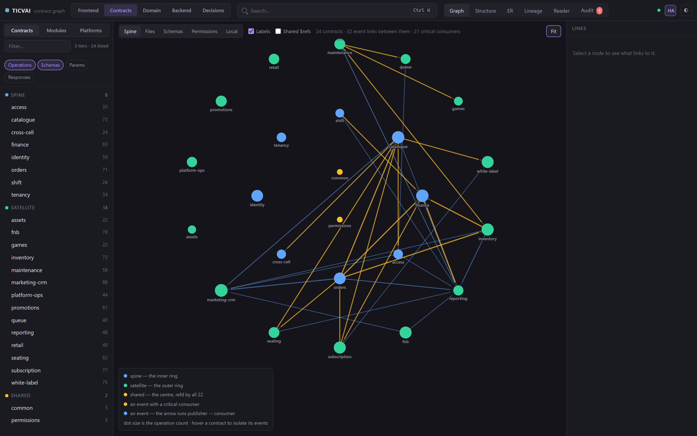
12345678910
— The Contracts layer showing the Files graph. Every view shares this frame.
3Views. Changes with the layer. The red badge counts errors.
4Live dot & theme. Green means it is watching files.
5Grouping. How the list below is organised.
6Filter & type chips. Narrow the list.
7The list. Contracts, screens or tables.
8Main view. The diagram or sheet itself.
9Links pane. What connects to the selection.
10Legend. What the colours mean, per view.
Moving around
Every diagram and every sheet pans the same way: drag anywhere to move it.
Scroll to zoom on the canvas views. A drag of less than a few pixels still counts as a click,
so cards and rows open normally — you do not have to be careful about it.
Canvas views have a Fit or Recenter button that frames
everything again if you get lost.
The sidebar
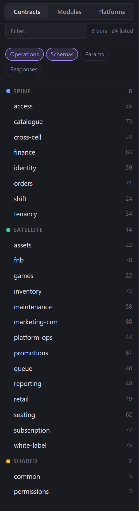
— Contracts, grouped by tier. The number is how many operations and schemas each holds.
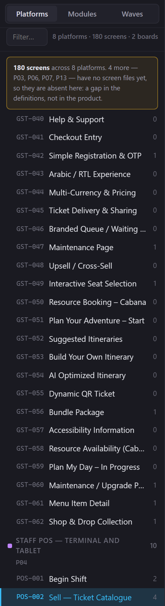
— The same pane in the Frontend layer: screens grouped by platform, with a note explaining the count.
The grouping buttons at the top change per layer, and the amber note appears wherever a count
needs explaining. Press m to cycle through the groupings without reaching for the
mouse.
Hover anything you do not recognise
The package is dense with vocabulary that is obvious to whoever wrote it and opaque to
everyone else: spine, ambient, saleBoard,
retryThenDeadLetter, posTerminal, "declared", "inferred",
"reversal". Hover it and it explains itself.
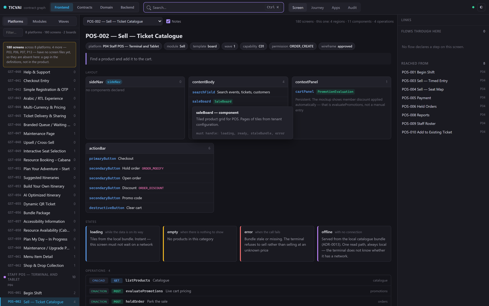
— Hovering a component kind. The description, and the states it must
handle, come from screens/_components.yaml — the shared library that exists so
the vocabulary is reviewed rather than invented per screen.
Two sources feed the tips, and the delivery's own words always win over the viewer's:
Source
Used for
The delivery's files
Component kinds and regions from screens/_components.yaml; schema descriptions and why the schema is separate from the workbook; a consumer's purpose and idempotency key from events/; a guard from states/.
A built-in glossary
The viewer's own vocabulary and the delivery terms defined in prose rather than in a field — tiers, edge kinds, triggers, failure policies, what "critical" means.
A tip that only restates the name is not an answer
handoff/tooltips.json ships 340 hover entries, and its own README states the
rule they were written to: "a tip reading 'Derived from fnb.Menu' is the same failure
wearing text". 203 of the 340 break that rule, including 202 of the 230 table tips,
which say only Derived from access.AccessPoint. So the file's coverage table
claiming 230 of 230 counts keys, not answers — 137 are substantive. The viewer detects a
restated tip and falls back to the workbook's own storage reason rather than repeating the
name back at you, and the audit reports the count as a warning.
Everything explainable is hoverable: the five layer buttons, every view tab, every toolbar
toggle and graph scope, every component and region on a screen, the four screen states, an
API call's trigger, a schema in the Backend sidebar, and every chip in the event catalogue.
Where the library names a component but gives no description — 14 of its 46 entries are
primitives like textField and toggle — the tip says so rather than
showing an empty panel.
3 · The five layers
Contracts sit near the middle deliberately — the API is the join between every other layer,
and all four others are drawn by resolving against it.
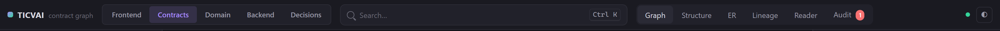
— The layer switch (left) decides which set of views (right) is available.
Layer
Views
Answers
Frontend
Screen · Journey · Apps · Waves · Audit
What does the user see, in what order, which app builds it, and when did we say it ships?
Contracts
Graph · Structure · ER · Lineage · Reader · Audit
What does the API offer, what shapes does it use, what depends on what, and which tables does each call touch?
Domain
States · Events · Audit
Which moves between statuses are legal, and what crosses the outbox when one happens?
Backend
Data · Migrations · Routing · Audit
What is stored, what actually exists in SQL, and where does each call go?
Decisions
Decisions · Audit
Which decisions were taken, what records them, and which requirements have nothing behind them?
Each layer brings its own views, its own sidebar grouping and its own audit — the error badge
counts that layer's problems, not the whole package's. Press 1 to
5 to switch, and hover any layer or view button to be told what it is for.
Layer
Reads
Frontend
screens/ · flows/ · frontend/ · wireframes/ · designs/ · handoff/screen-index.json for the waves
Contracts
contracts/ — 24 OpenAPI 3.1 files · handoff/api-data-lineage.json and the workbook's Data lineage sheet
Domain
states/ · events/
Backend
backend/ SQL · handoff/ workbook and relationships.csv
Decisions
docs/ — 18 ADRs, 31 documents and 7 registers
Shortcuts cross layers
A view shortcut for another layer takes you there. Press d for Data while you
are in Frontend and the viewer switches to Backend and opens Data. You never have to
change layer first.
Adding a layer
The Domain layer was added exactly this way when states/ and
events/ arrived, and the Decisions layer the same way when docs/
was indexed: one entry in the LAYERS array in public/app.js plus a
render function. Nothing else in the application hard-codes the list, so services — expected
to arrive as their own layer — will cost the same.
4 · Contracts layer
24 contracts, 654 operations, 554 schemas and 2,935 resolved $ref links. Six
views over the same material, from furthest out to closest in. Four of them are here, each
with its own controls; Lineage has the next chapter to itself, and the audit is in
chapter 13.
Graph — how the contracts depend on each other
A map of the reference graph, with five scopes on the toolbar. They are not
five styles of the same picture — each answers a different question, and picking the wrong
one is why a graph can look like spaghetti. It opens on Spine.
Scope 1 · Spine — the architecture, and what actually couples it
The picture the obvious view cannot draw
The Files scope below draws 24 contracts and 44 $ref links — and
every single one of those links points at shared/common or
shared/permissions. No contract $refs another. So it produces
a two-pointed starburst that is true of everything and distinguishes nothing: the same
defect handoff/schema-viewer-notes.md identifies for venue_id and
principal_id in the Data view.
The contracts are not joined by $refs. They are joined by events.order.paid is published by orders and consumed by
catalogue, finance, inventory,
marketing and reporting. Until events/ arrived there
was nothing to draw that from.
— shared/ at the centre because everything rests on it,
the eight spine contracts in the inner ring, the fourteen satellites outside.
Every arrow is an event, running publisher → consumer. Amber where a consumer is
critical. Dot size is the operation count.
Position carries meaning here, so the force layout is switched off. Within each ring
the order is settled by pulling contracts that exchange events next to each other, which
keeps the arrows short; drag one and it stays where you put it. Dots are sized by operation
count rather than by degree — in the Files scope a contract's degree is always zero, so
every dot there is the same size and the label claiming otherwise was wrong.
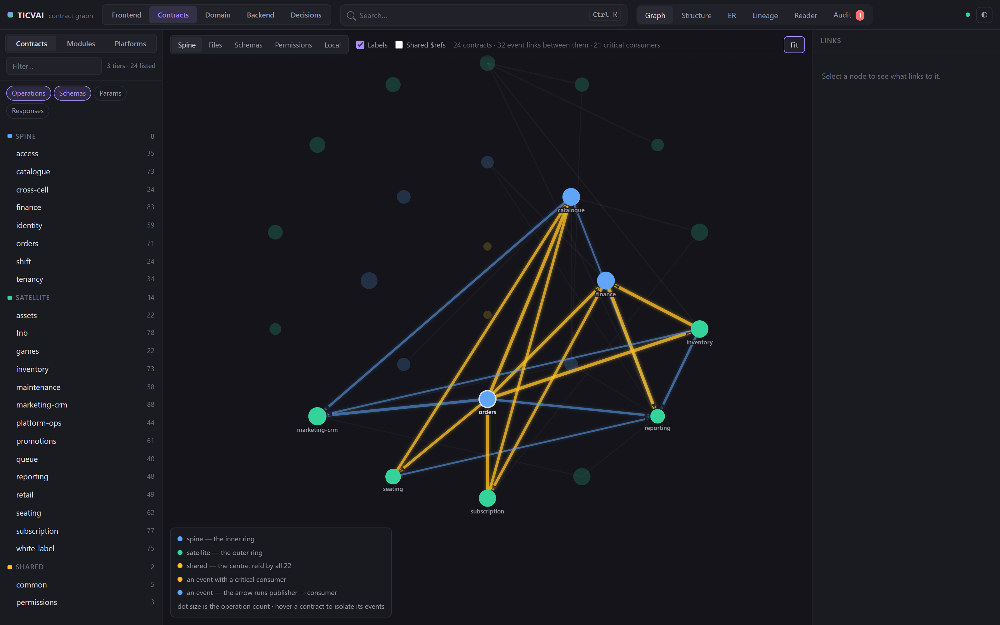
— Hover a contract to isolate it. orders publishes to
catalogue, finance and inventory critically (amber),
and to marketing, reporting, seating and
subscription otherwise. This is the coupling that decides what a change to
orders actually costs.
The Shared $refs toggle adds the 44 links back. It is off by default for the same
reason Ambient keys is off in the Data view: an edge true of every contract tells you
nothing about any one of them.
Scope 2 · Files — the raw $ref graph
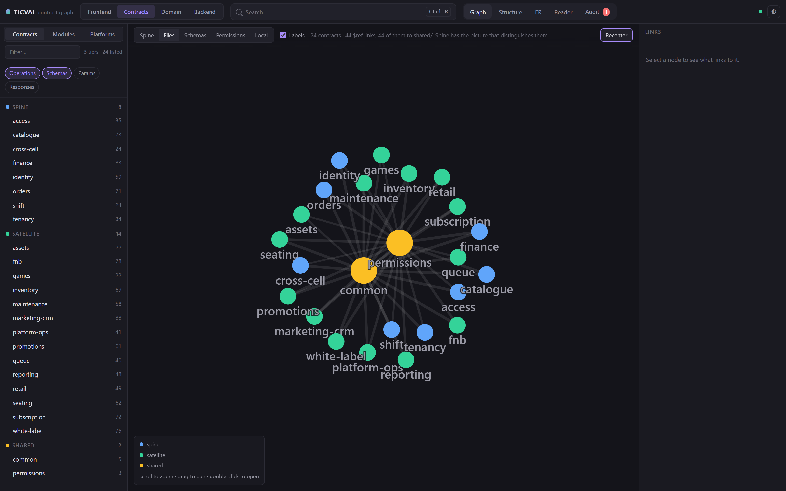
— One node per contract, with the $ref links as they
really are: 44 of them, all pointing at shared/. Colour is the tier — blue
spine, green satellite, amber shared. Honest, and not very useful; the hint says as much.
Worth opening for one question only: how heavily does this contract lean on
common? A thick edge means a change there lands on it. For anything about
how contracts relate to each other, use Spine.
Scope 3 · Schemas — what shapes already exist
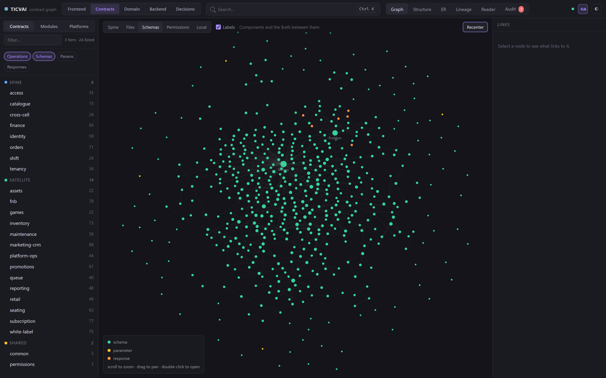
— Every schema component in the package and the $refs between
them. Dense clusters are one contract's own entity family; the bridges between clusters are
the shapes shared across contracts.
Use this when you are about to define a new type — if something close already exists, it is
one of the well-connected nodes here. This is the busiest scope, 537 nodes, so turn
Labels off to read the shape, or select something and press l to narrow to
its neighbourhood.
Scope 4 · Permissions — who is allowed to do what
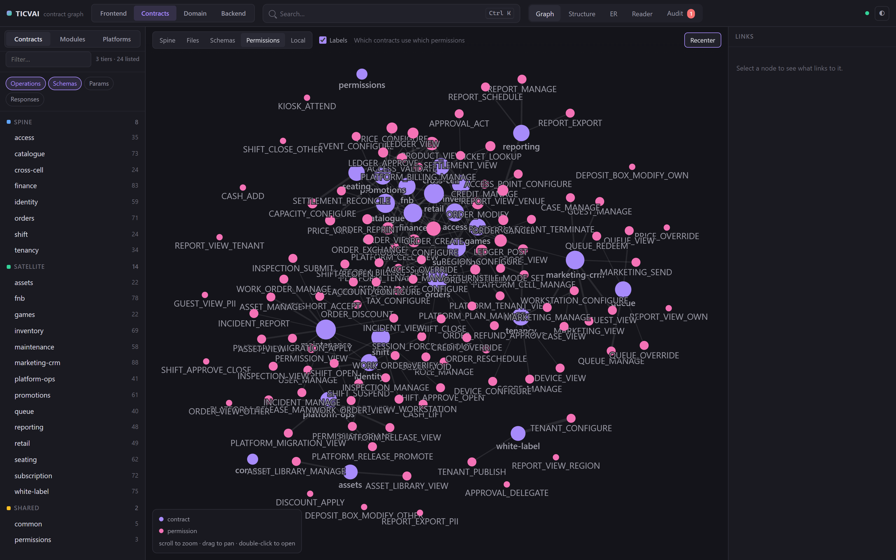
— Contracts mapped to the 111-permission vocabulary. A permission with many
edges is a right that unlocks a great deal; one with none is declared but unused, and the
audit lists it.
Use this for an access review: pick a permission and see every contract whose operations
require it. Pink nodes are permissions, coloured ones are contracts.
Scope 5 · Local — just this thing and its surroundings
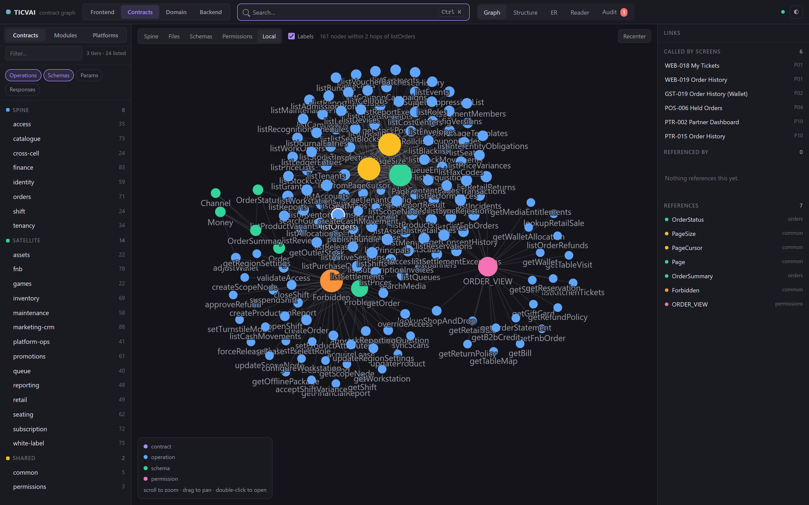
— The neighbourhood of whatever is selected: two hops from a
component, one from a whole contract — a contract is already dozens of nodes before
the walk starts. Everything else is left out entirely.
The scope to reach for when the others are too much. Select anything — from the sidebar,
from search, from a link in the Reader — and press l. It is the fastest way to
answer "what is this connected to" without reading a whole map.
The Graph controls
Control
Does
Spine · Files · Schemas · Permissions · Local
The five scopes above.
Labels
Names on or off. Off is much easier to read at the Schemas scope.
Recenter
Reframes everything after you have panned away.
Scroll
Zoom.
Drag background
Pan.
Drag a node
Move it and pin it there.
Click · double-click
Select · open it in the Reader.
Structure — what is inside one file
A block diagram of a single contract's YAML, in two layouts. Scalar leaves
are listed as rows inside their parent block, so an operation reads as one card with its
operationId, summary and four x-ticvai-* fields rather
than eleven separate boxes.
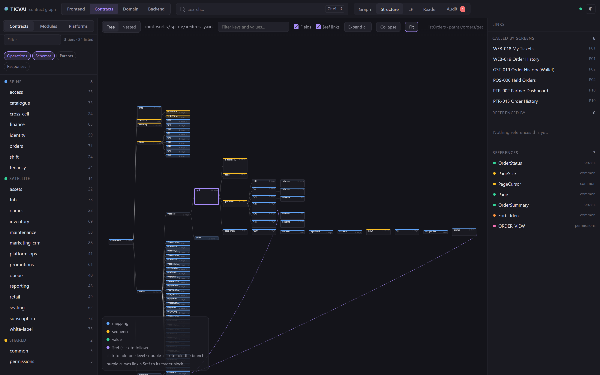
— Tree. Depth runs left to right, siblings stack down each column. Best for seeing how deep something is.
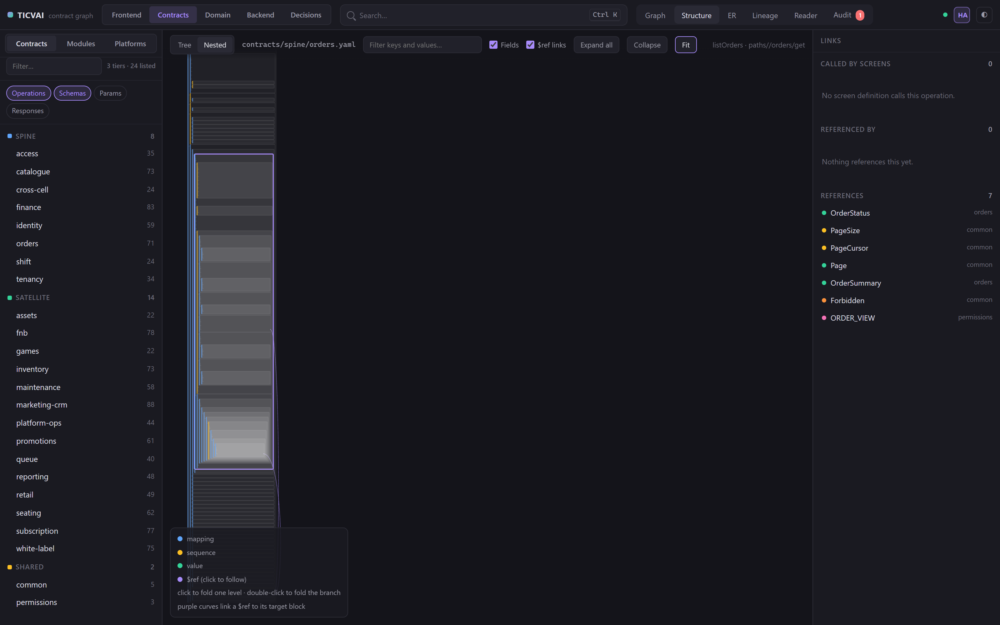
— Nested. Containment instead of depth — each mapping wraps its children. Best for seeing what belongs to what.
The Structure controls
Control
Does
Tree · Nested
The two layouts above.
Fields
Off gives the bare skeleton — the fastest way to see a file's shape.
$ref links
Draws a curve from each reference to its target when both are in this file. Dashed means the exact target is folded away and the line lands on the nearest visible block.
Expand all
Unfolds everything. On a large contract this is enormous — use Fit after.
Collapse
Back to the top level.
Fit
Frames the whole diagram. The default zoom is floored to keep text readable; Fit overrides that.
Click a block
Folds one level.
Double-click a block
Folds the whole branch.
ER — the entities of one contract
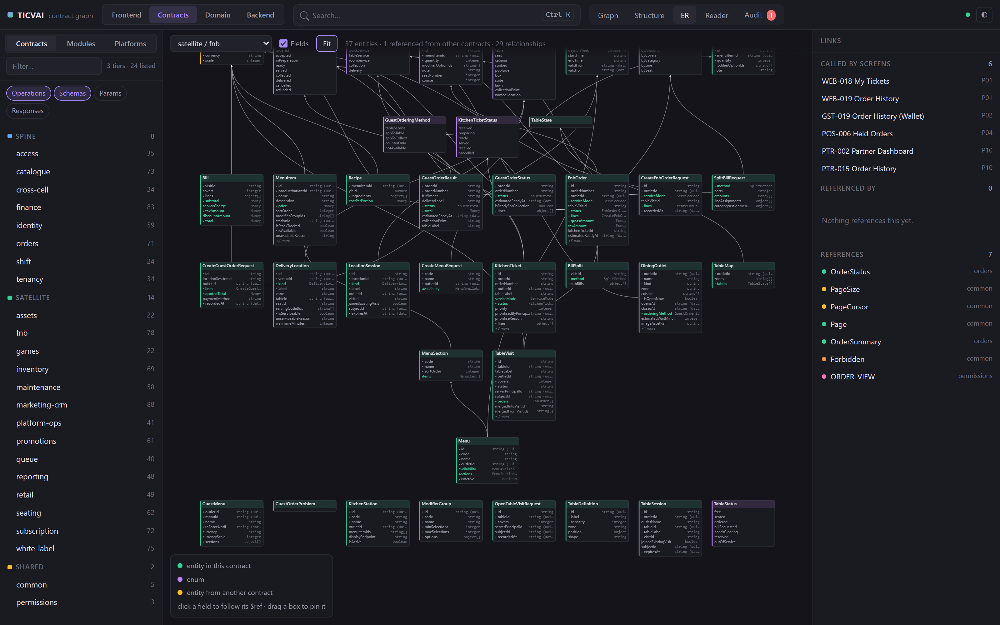
— The fnb contract's schemas as entity boxes, laid out as a
hierarchy: an entity sits below the entities it references. Every field shows its type,
• marks required, and $ref fields are in the entity colour.
Purple boxes are enums; amber ones are pulled in from another contract.
Control
Does
Contract picker
Which contract's entities to draw.
Fields
Field rows on or off. Off leaves entity names and their relationships.
Fit
Reframes everything.
Click a field
Follows its $ref to what it points at.
Drag a box
Moves it and leaves it there.
Hover or select
Everything unrelated dims; the connected lines thicken and glow.
This view is for API entities. Screens have regions and components rather than
entities, so they are not here, and the database's own tables live in the Backend layer's
Data view.
Reader — the YAML itself
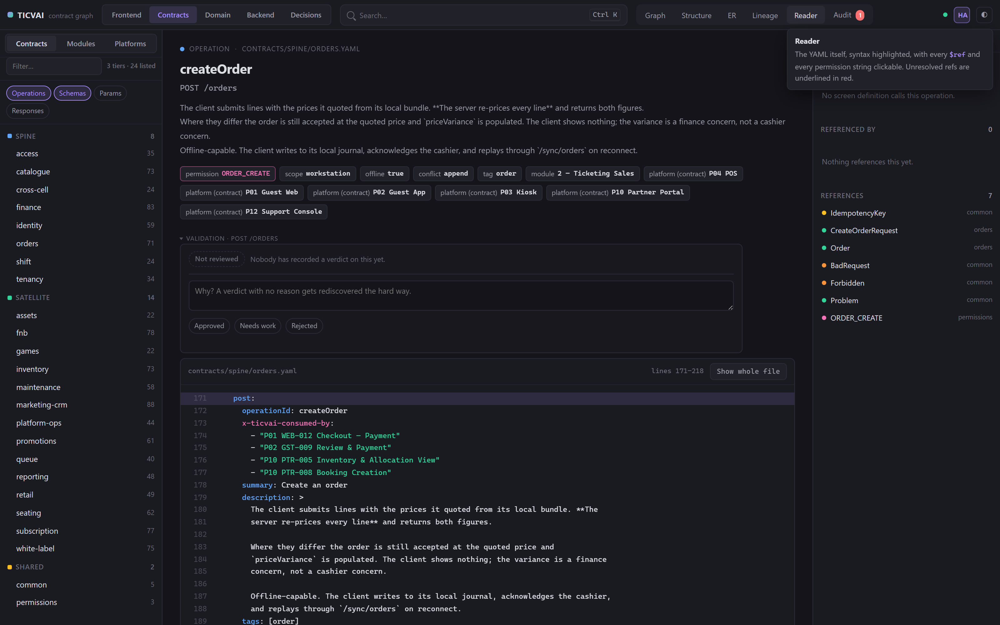
— createOrder in the Reader. Every $ref is a
link that resolves across files, and every permission string jumps to its definition.
Unresolved references are underlined in red. Show whole file expands from the
selected block to the full document.
The Reader is where a chain of links ends: search for a name, land here, and follow its
$refs into other contracts without opening a file by hand. The header above the
YAML carries the operation's four x-ticvai-* extensions — permission, scope,
offline capability and conflict policy — which is the quickest way to check them.
5 · Lineage
Which tables an operation actually touches. 654 operations, 165 tables, 22 services.
Contracts layer, Lineage tab.
Why this view exists
Until the lineage arrived, the Contracts layer and the Backend layer were two unconnected
universes. A contract operation knew its permission and its scope. A table knew its columns
and its foreign keys. Nothing knew that validateAccess writes
access.scan_event.
That link is not derivable from the contracts. x-ticvai-persistence marks which
schemas become tables; it does not mark which operations touch them. So the viewer was right
not to guess it, and wrong only in having nothing to show. The join had to arrive as data,
and it did — from four places, read by lib/lineage.mjs.
Source
Carries
handoff/api-data-lineage.json
654 operations against the tables each reads and writes, its service, its read routing, its scope level, its permission and whether it works offline.
The workbook's Data lineage sheet
The same join, stated again — and not the same data. It carries a routing the JSON export lost, and a stored procedure column the JSON has no field for.
The workbook's Where used sheet
The reverse index: all 230 tables against the operations and screens that reach each. Its own subtitle is the reason to read it — what breaks if this table changes.
handoff/screen-index.json
347 screens against their board anchor, operations, services, tables, stored procedures and wave.
Two sources, and one of them is lossy
The JSON and the sheet agree wherever both speak — 0 disagreements across all 654
rows. But the export dropped the routing value on 399 operations that the sheet
decides, leaving an empty string where the sheet says write. A viewer
reading the JSON alone therefore reports 399 operations as having no routing decided when
the workbook has decided every one of them. So the sheet is merged in, it wins on the
fields the export lost, and a row filled from it carries a mark saying where the value came
from. Any disagreement between the two would be reported rather than resolved silently;
there are none.
The chain
wireframes/LINKAGE.md draws the whole thing in one line, and it is worth keeping
in view because every hop is a different file:
Worked through, from the delivery's own example:
P07 Staff Scanner.dc.html#scn-004 is SCN-004 Admitted, which calls
validateAccess, which lives in AccessService, writes
access.scan_event, reads six tables including
access.admission_profile and access.blacklist, and is one of the
stored procedures — access.sp_validate_and_record. Five files answer that
sentence. This view is the middle three of them.
The screen end of the chain is thinner than the operation end, and the index says so rather
than padding it: 155 of the 347 screens declare an operation, and 108 reach a table.
The rest are screens with a purpose and no declared operation — real screens, not yet
specified, returned as empty arrays rather than guesses. Chapter 7 lays that out by wave.
The three scopes
The same material three ways, on the toolbar. It opens on Operations. A filter box
narrows all three at once, and it matches operation names, paths, services and table names —
so typing a table name in the Operations scope gives you everything that touches it.
Scope 1 · Operations — grouped by contract
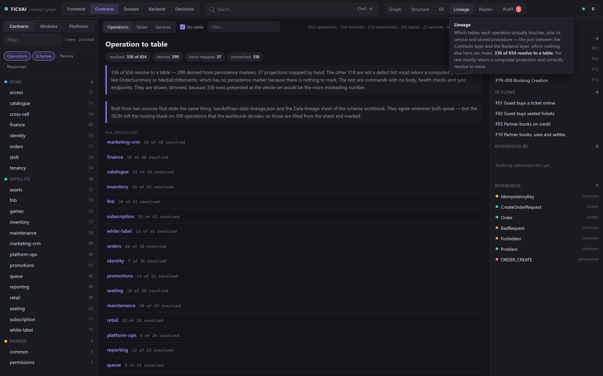
— The Lineage view, operations grouped by contract; dimmed rows are
the 318 that resolve to no table. Each row carries its method, path, routing, scope,
service and the tables it touches — writes first, then reads. Click the name to open
the operation in the Reader; click a table chip to open it in the Backend layer's Data
view.
Each group header says n of m resolved for that contract, which is the fastest
way to see whose lineage is thin. A table chip for a table the schema workbook does not list
is drawn as unknown and refuses to navigate — it tells you why instead.
Scope 2 · Tables — the other direction
Each table with every operation that touches it, drawn as a bar: red for the operations that
write it, green for the ones that read it, sorted busiest first. The busiest tables are
the ones a schema change costs most to make, and that is not visible anywhere else in the
viewer. orders.sales_order is the busiest: 13 operations touch it, 12 reading
and 7 writing, across two services.
The prose and the sheet disagree here, and the sheet is checkable
handoff/services-and-procedures.md says "orders.sales_order
is read by 23 operations across four services". The resolved lineage gives 13
operations across two. The prose was written before the sheet was; the view counts rows
rather than repeating the sentence, and the argument the sentence was making — that a table
this contested is the case for the outbox rather than direct writes — survives the smaller
number.
Above the bars sits the scope of the claim, taken from the Where used sheet rather
than from the lineage: of the 230 tables in the schema reference, 191 are reached by an
operation and 51 by a screen. The other 39 are reached by nothing at all — written by a
job, a migration or a trigger, or by nothing yet. Those 39 are listed by name underneath, so
the absence is a list rather than a subtraction.
Scope 3 · Services — 22 of them
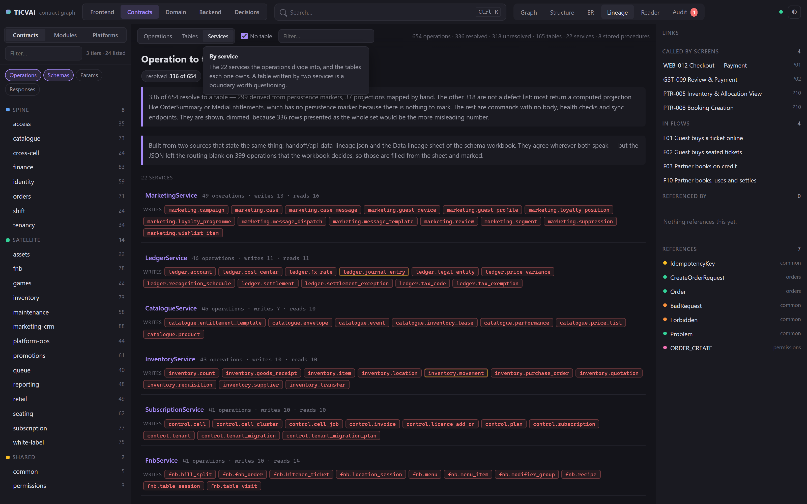
— By service. One card per service with its operation count and the
tables it writes; the tables more than one service writes are marked on the card and listed
again at the bottom.
The services mirror the contract boundaries exactly, and
handoff/services-and-procedures.md gives the reason: "The contract is already
the service boundary; inventing a different one would create two maps of the same
territory." The rule that makes it a boundary rather than a namespace is the next line:
"A service owns its tables and no others."
So the view computes the exception rather than leaving it to the eye. A table two services
both write is a boundary drawn in the wrong place — whichever service does not own it is
reaching across one. There are two: ledger.journal_entry, written by
LedgerService, OrderService and ShiftService, and
inventory.movement, written by InventoryService and
MaintenanceService. Not defects on their own, but both are questions worth
asking before the code exists.
Ten stored procedures, eight of them on the sheet
The delivery argues for services over procedures at length — RLS with FORCE
exists so that nothing bypasses it, and a definer-role procedure does — and lands on ten.
The Data lineage sheet names 8 against an operation; its own footnote and
services-and-procedures.md both say "the ten stored procedures". The
other two are argued for in prose and marked against nothing, so the viewer shows eight and
reports the difference rather than picking a number. Six of the eight are named by a screen
in screen-index.json, and it is those six it can place on a screen.
318 resolve to no table, and that is mostly correct
336 of the 654 operations resolve — 299 derived from persistence markers, 37
projections mapped by hand. The other 318 carry "source": "unresolved".
All four numbers are chips across the top of the view, next to each other, always.
The 318 are not a defect list
Most of them return a computed projection — OrderSummary,
TicketStatus, MediaEntitlements — assembled across tables rather
than persisted, and a projection has no persistence marker because there is nothing to
mark. The rest are commands with no response body, health checks and the sync
endpoints. services-and-procedures.md states this is the correct outcome, not
a backlog. Read the number as the shape of an API that returns more views than it stores,
not as 318 rows of work.
They are drawn rather than dropped for the same reason inferred relationships
are drawn dashed everywhere else: a view that quietly showed 336 operations would read as
"these are all the operations there are", which is the more misleading number. So
each is dimmed, with a no table chip where the table list would be, and the
No table toggle removes them. It is on by default, and switching it off visibly
removes rows — a count that changes when you hide something is a count you can trust.
The same file states where the resolved half is weakest, and the view inherits the weakness:
"an operation that reads a table only to check a permission or resolve a scope does not
show it. The lineage is what an operation is about, not every row it touches."
Row security means every scoped read also touches platform.scope_node, and only
six of the 654 rows say so.
What the view checks
The lineage and the contracts are two independent statements about the same 654 operations,
so where they disagree one of them is stale. The reader compares three fields on every row —
permission, scope and offline capability — against the contract the viewer has already
indexed, and reports any difference as lineage-contradicts-contract. The
contract is the source of truth, so a finding means the lineage needs regenerating.
There are currently none.
Check
Catches
lineage-contradicts-contract
A row whose permission, scope or offline flag disagrees with the contract. None at present.
lineage-unknown-table
A table the lineage names and the schema workbook does not list. Five at present.
lineage-unknown-operation
A lineage row for an operation no contract declares — the file was generated against a different set of contracts.
lineage-json-incomplete
Fields the JSON export dropped that the workbook sheet carries. 399 routing values at present.
stored-procedure-count
The sheet naming a different number of stored procedures from the prose that describes it. 8 against ten.
table-reached-by-nothing
A table in the schema reference no operation reads or writes. 39 at present.
screen-index-unknown-screen
An index entry for a screen no platform file defines.
Five tables the workbook does not list
orders.b, marketing.consent,
reporting.report_execution, queue.queue_entry and
whitelabel.homepage_section. Four of them look like tables that exist in
somebody's head and not yet in the workbook. orders.b does not look like a
table name at all — it reads as a truncation artefact in the source file, though that is an
observation rather than something the viewer can establish. Either way the viewer names all
five rather than dropping the chips, and the chips refuse to navigate.
Routing and scope
Every row carries where its read is routed and which level of the hierarchy it is authorised
at. All 654 now carry a routing, but only because two files were read rather than one:
Routing
Operations
Stated by
Means
write
399
The sheet
A write. It goes to the primary by definition. Every one of these is blank in the JSON.
replica
192
The JSON
A read that may be served from a replica.
primary
35
The JSON
Must hit the primary — either it writes, or it reads something it just wrote.
analytical
28
The JSON
Served from the analytical store. Never on a transaction path.
Absent is not the same as undecided
The 399 blanks were never a decision nobody had taken; they were a decision the export
lost. The distinction matters because "nobody has decided" and "routed to the
primary" are different claims and only one of them is safe to build on — so the reader
fills them from the sheet and marks the chip, rather than either defaulting them to
replica or leaving 399 operations looking undecided. Hover a marked chip and
it says where the value came from.
Scope is stated for all 654: venue 410, tenant 153, workstation 45, region 44, brand 2.
A grant at a level inherits downward and never bubbles up, so the venue-scoped majority is the
shape of the platform rather than an accident of the file. 109 operations are marked
offline-capable. Of the 336 that resolve, all 336 read at least one table and 256 of them
also write.
The Lineage controls
Control
Does
Operations · Tables · Services
The three scopes above.
No table
The 318 rows that resolve to no table, on or off. On by default, and switching it off visibly removes rows.
Filter
Matches operation ids, paths, services and table names, in whichever scope is open.
Click an operation
Opens it in the Contracts Reader.
Click a table
Switches to the Backend layer and selects it in the Data view.
Click a group header
Folds that contract away. Groups open automatically when a filter is active.
The join is traced in both directions
This view reads the chain from the contract end. The same join is read from the other two
ends as well: a screen page carries a reaches section — services, tables written,
tables read, stored procedures — and selecting a table in the Backend layer fills the Links
pane with the operations that touch it and the screens that reach it. Chapters 6 and 11.
6 · Frontend layer
347 screens across 12 platforms, each reaching a wireframe; 12 journeys, 10 apps, and the
design boards the plan was drawn from. What the user sees, in what order, and who builds it.
The layer's fifth view, Waves, has the chapter after this one.
Screen — the schematic a wireframe implements
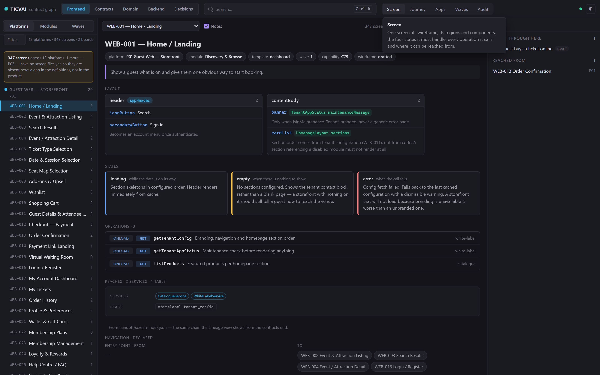
— A screen page. Regions as blocks with their components inside, the four
states as their own panel, every operation the screen calls, and — below the fold —
navigation, the platform's deployment block, the wireframe, the design board and the
implementation path.
A screen page answers, in this order:
Section
Tells you
Chips
Platform, module, layout template, wave, capability, the permission that gates the whole screen, and the wireframe status — notStarted through approved.
Layout
Each region as a block, with its components inside. A component shows what it binds to (Shift.floatTotal), the permission that hides it, and any note.
States
Loading, empty, error and — where the platform is offline-capable — offline. A required state nobody declared is drawn as the finding it is, not quietly left out.
Operations
Every call, with its trigger (onLoad, onAction…), method and contract. Click through to the contract.
Reaches
Where those calls end up: the services behind them, the tables written, the tables only read, and any stored procedure. The frontend end of the lineage in chapter 5. A screen naming no operation gets the honest version — it reaches nothing, and 192 of the 347 are in that position.
Navigation
Entry points in and destinations out, clickable. The heading says declared or inferred.
Deployment
How the whole platform ships — runs on, ships by, hosting, update model, cadence, network assumption, device ownership, store review.
Wireframe
This screen's own drawing, framed live. All 347 screens have one: the viewer lifts that screen's frame out of its platform board, matched by anchor — see below.
Design board
The exported UI/UX artboard the whole platform was drawn from, framed live. Only appears when there is one — one platform has them.
Implementation
App, route and component path — the file a developer opens.
Control
Does
Screen picker
Every screen, grouped by Screens and Design boards.
Notes
The explanatory notes under each component, on or off.
Drag
Pans the sheet.
Navigation says which kind it is
327 of the 347 navigation blocks are marked inferred — derived from module and
flow order rather than drawn by anyone. Those render as dashed pills under a heading that
says so. A sitemap that looks authoritative while being mostly guessed is worse than no
sitemap, so check the heading before relying on a route.
Journey — one job, traced across screens
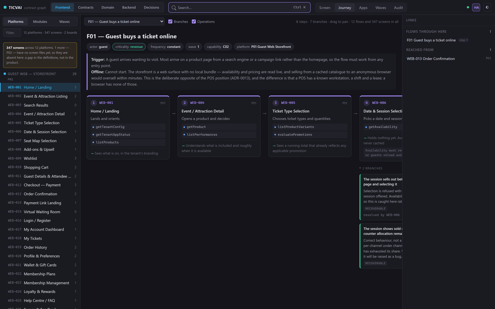
— F01, a guest buying a ticket online. Steps run left to right; each
carries its screen, the operations it calls and its outcome. The trigger and the offline
position are stated at the top.
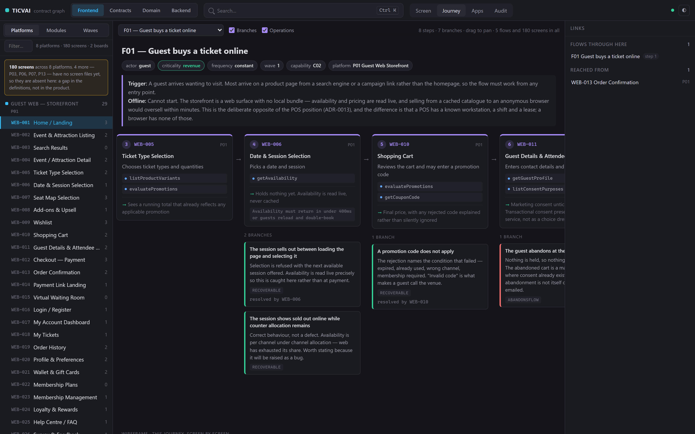
— The same journey dragged left. The branches that can derail a step
hang underneath it, coloured by severity from recoverable through to data loss, with
exit states at the end. The title and chips stay pinned while the track moves.
Control
Does
Journey picker
Which of the twelve flows to trace.
Branches
The failure branches under each step, on or off. Off gives the happy path alone.
Operations
The API calls inside each step card, on or off.
Drag
Pans the track, which is wider than any window.
Click a step
Opens that screen.
Nothing in this view is inferred: every step, branch, screen link and route is declared, and
the loader reports any that points at something which does not exist.
Below the track the journey is drawn: each step's screen lifted out of its platform
board as its own frame, in step order, so the flow can be read as pictures rather than as
names. The flow page in wireframes/ is the fallback, used only where no screen
on the journey resolves to a board frame.
Apps — what actually gets built
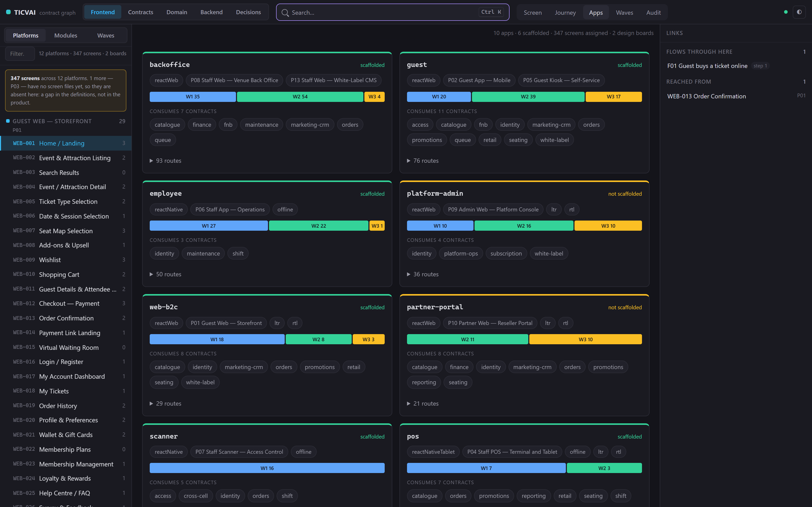
— The manifests in frontend/: which platforms each app serves,
which contracts it consumes, and its screens split by wave. Scaffolded apps are
green-topped, the rest amber. 10 apps, 6 scaffolded.
Each card carries the app's runtime, the platforms it serves, whether it is offline-capable,
a wave bar showing the delivery shape, the contracts it consumes (clickable) and a
collapsible list of its routes (also clickable). The design boards are listed underneath.
Wireframes — a board per platform, a page per journey
wireframes/ holds twelve platform boards, each drawing every screen on its
platform as one anchored frame, alongside a page per flow and a contents page per platform.
They are framed live rather than screenshotted, so they scroll and respond exactly as they
do standalone.
Nothing here is inferred. A wireframe is either named for exactly the thing it draws
— flow-f01.html is flow F01, p04.html is platform P04 — or it is a
platform board carrying one frame per screen, and the anchor is the screen id, so
P04 Staff POS.dc.html#pos-002 is screen POS-002. Neither join is guessed: the
first is the file name, the second is declared by the screen itself in
wireframe.board. The two sides line up exactly: 347 screens, 360
wireframes — 347 frames across 12 boards, 5 flow pages and 8 platform pages — and every
screen resolves. A screen with no frame, and a frame no screen claims, are both reported
as findings.
One frame, lifted out of the board
A board is a single file holding every screen on its platform — 713KB at the largest.
Framing the whole board and scrolling it to an anchor would show the right screen with
dozens of others around it, so the viewer lifts that one
<div id="web-002"> out and serves it as a document of its own at
/frame?board=…&anchor=…. The frames carry all their styling inline, so
nothing is lost by moving one. All 347 extract with balanced markup, and the largest board
drops from 713KB to about 10KB per frame.
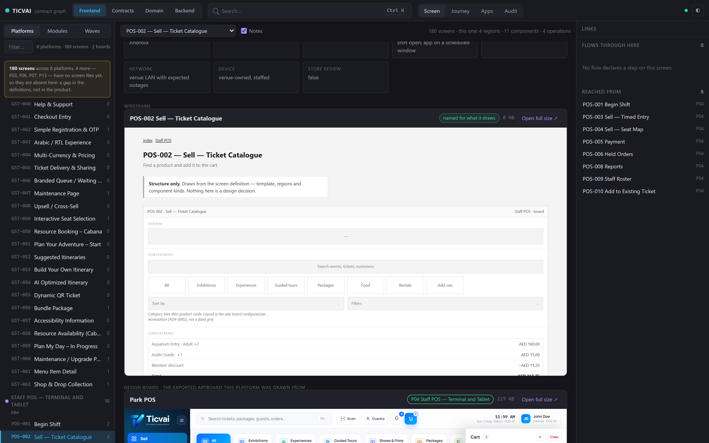
— POS-002's frame on its screen page, lifted out of the P04 board.
The chip reads from the platform board: hover it for the board and anchor it came
from. Open the board ↗ opens the whole board in its own tab.
These are structure, not design
A frame shows what is on a screen and where, not what it will look like. The field
names, enums, states and deny reasons on it are read off the package —
contracts/, states/ and screens/ — so a frame is
checkable against the definition rather than invented. Where a screen had no definition at
all — 136 had none — the frame is derived from the contract operations that reach no
screen, and the board header says so. The design boards below are the other thing: what it
should look like.
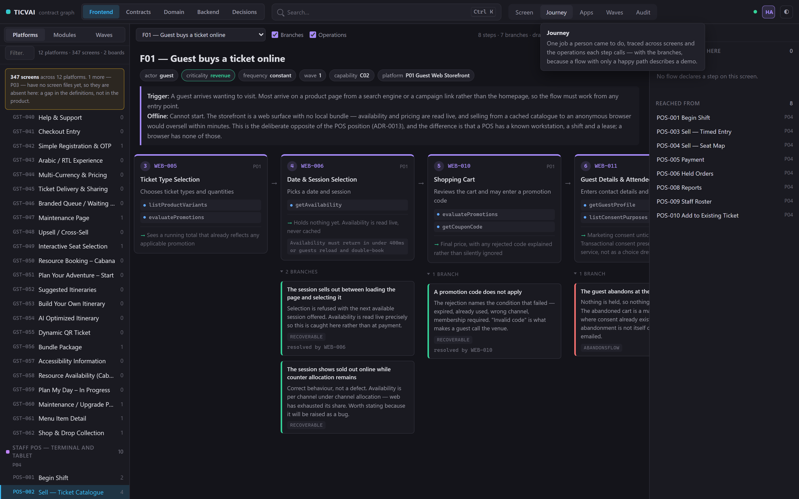
— A journey's flow page: the whole flow, screen by screen, on one
document. Five of the twelve flows have one; the other seven are listed as notes in the
Frontend audit. This is now the fallback — where the steps resolve to board frames, the
page draws those instead.
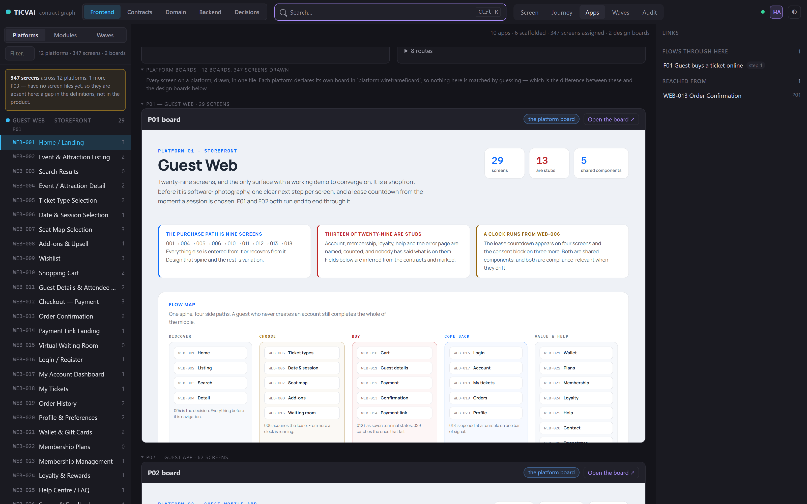
— The Apps page carries a wireframe per platform: every screen on
that platform, listed on one page. Twelve platforms have screens; eight have one of these,
and all twelve have a board. The boards themselves are framed underneath, whole rather than
a frame at a time — all 12 of them, 347 screens drawn.
Wireframes and design boards are different claims
Wireframe
Design board
Folder
wireframes/
designs/
Covers
One platform as a board of anchored frames, or one flow or platform as a page
One platform, as a single exported artboard
Attached by
An anchor inside a platform board, or file name = id. Nothing is guessed.
A screen naming it, or failing that the file name — and the viewer says which
Says
What is on the screen, from the definition
What it should look like, from the designer
Coverage
347 of 347 screens, as frames on 12 platform boards
2 boards, 1 platform
Design boards — the UI/UX exports
designs/ holds the exported design boards as working HTML. The viewer serves
them and frames them live, so they scroll and respond exactly as they do standalone —
these are not screenshots.
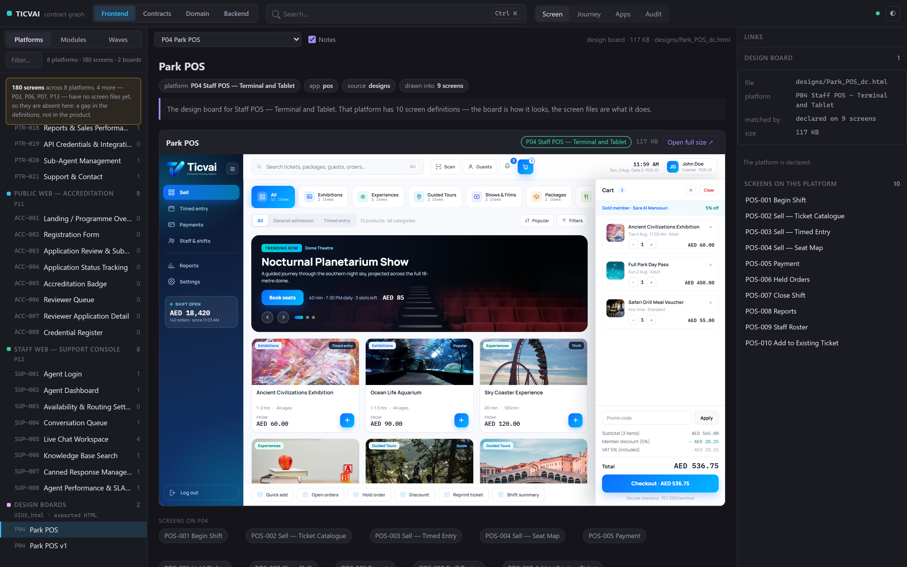
— The Park POS board open as a page of its own, reached from
DESIGN BOARDS at the bottom of the sidebar. The chips say which platform it belongs
to and how many screens were drawn from it; the pills underneath open those screens.
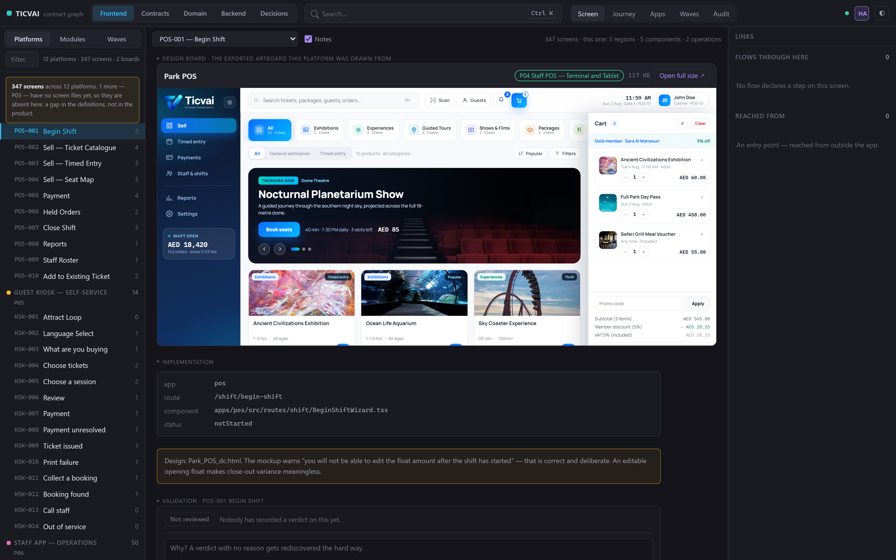
— The same board on a screen page. Every P04 screen carries
wireframe.owner: design — Park_POS_dc.html, so the viewer knows the board
belongs there. Open full size ↗ opens it in its own tab.
Where a board appears
Place
Which boards
A screen
The board that screen names, or failing that any board for its platform.
A journey
Boards for the platforms that journey runs on.
Apps
All of them, with a link to open each as a page.
Sidebar
All of them, under DESIGN BOARDS — which is how a platform with a board but no screen files stays reachable.
Declared or inferred, again
A board's platform is declared when a screen names the board in its
wireframe.owner or wireframe.board — P04's nine screens do.
Otherwise it is inferred from the file name (the app slug pos → P04),
drawn with a dashed chip and a note saying so. A name that could mean two platforms is
refused rather than guessed at. An earlier revision — Park_POS_v1_dc.html — is
not shown beside the board it supersedes; it is reachable from that board's page.
7 · Waves, and how the drawings attach
Two subjects in the Frontend layer. The first the viewer did not show at all; the second it
showed wrongly, and this chapter settles it.
Waves — what ships when
Every screen carries a wave, and a wave is a commitment. It is the sequencing somebody
agreed to, written on the screen itself rather than in a plan sitting beside it. Nothing else
in the viewer represented that dimension. The Screen page carried the wave as a chip and no
view counted them, so the one question a delivery plan exists to answer — what did we say we
would ship first, and can it be built — had no page.
347 screens across 3 waves. Wave 1 is 133 screens, wave 2 is 153, wave 3 is 61. Each
wave is then broken down by platform, one card per platform, largest first, every screen in
it as a cell. The wave and the operations both come from
handoff/screen-index.json; the tables come from the lineage behind it.
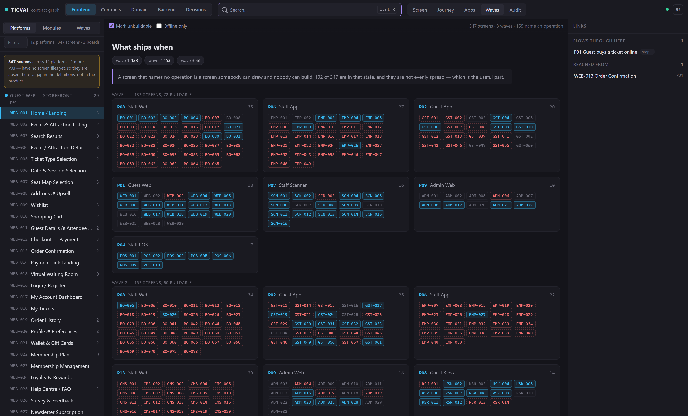
— 347 screens across three waves and twelve platforms; dashed cells
name no operation. The label above each grid reads wave 2 — 153 screens, n
buildable. Click any cell to open that screen.
The number this view exists for
192 of the 347 screens name no operation. 155 name one. Only 108 reach an actual
table. A screen that names no operation is a screen somebody can draw and nobody can
build: there is nothing to call, so there is nothing to implement against. Those cells are
marked — dashed and red — and the point of laying them out by wave and platform is that they
are not evenly spread.
From handoff/screen-contract-linkage.md
The gap used to mean missing screens. All 347 screens now exist, so it no longer
does — it means screens that name no operation, "and every one of those is a screen
somebody can draw and nobody can build."
The index does not guess. A screen with no declared operation returns an empty list rather
than a plausible one, and the cell's tooltip says so: a real screen, not yet specified. That
is the distinction the view is protecting — an unspecified screen and a screen with no
purpose look identical in a count and are not the same problem.
Reading a cell
Cell
Means
Accent — solid
Reaches a table. The screen names an operation, and that operation resolves through the lineage to something the database actually holds. 108 screens.
Dim — plain
Names an operation that reaches no table. Buildable against the contract; usually a projection, so there is nothing to persist rather than something missing.
Red, dashed
Names none. 192 of them. Hover for the route and the wave; there is nothing else to say about it.
Control
Does
Mark unbuildable
The dashed red marking on screens that name no operation, on or off.
Offline only
Restricts every count and grid to offline-capable screens. The counts in the hint line move with it.
Click a cell
Opens that screen in the Frontend layer.
When the file is not there
The whole view rests on one file. Without handoff/screen-index.json the page
says so — "no wave is stated for any screen" — rather than drawing an empty grid
that reads as nothing left to ship.
How the drawings attach
The previous chapter states the rule the viewer now follows; this is the history behind it,
because the earlier account was wrong in a way worth recording.
There used to be two kinds of drawn artefact for a screen. wireframes/screens/
held 180 standalone renders, one file per screen, generated from the screen definition and
matched by file name. The platform boards held the same screens again, one anchored frame
each, drawn with real field names and states. Both existed, and only one of them was the
drawn article.
wireframes/screens/ has since been deleted from the delivery, so the 180
standalone renders are gone. Every screen is now drawn exactly once: as a frame on one of
the 12 platform boards. There is no file-name lookup left for a screen, and nothing to
choose between.
Screen
Flow or platform page
File
wireframes/P07 Staff Scanner.dc.html
wireframes/flow-f01.html, wireframes/p04.html
Draws
Every screen on one platform, each behind an anchor
One flow, or one platform's screens as a contents page
Attached by
The anchor — …#scn-004 is SCN-004, declared in wireframe.board
File name = flow or platform id
How many
12 boards, 347 frames
5 flow pages, 8 platform pages
One board can hold 73 screens, so for a screen the file name settles nothing. The join is the
anchor, and that link is declared, not guessed: every screen carries
wireframe.board and every platform carries platform.wireframeBoard.
This stays inside the same rule as the rest of the package — the design boards in
designs/ infer and say so; nothing here does.
With the boards read, the two sides line up: 347 of 347 screens resolve to a board frame,
across 12 boards holding 347 frames, and every frame is claimed by exactly one screen.
Both directions, none missing, none left over. Rather than frame a 713KB board and scroll it
to an anchor, the viewer lifts the one frame out and serves it as a document of its own at
/frame?board=…&anchor=… — which is what the screen page, the Journey view
and the Apps page all draw.
This was a viewer defect, and it is fixed
Before this, the matcher looked only at file names. It found the 180 standalone files,
could not see inside a board, and reported 167 wireframe-missing and 13
wireframe-unmatched — 180 findings. Every one of them was an artefact of
the matcher, not of the package: the screens were drawn and the boards were on disk the
whole time. Fixing the join turned 180 false problems into 7 real ones.
The check that matters
From wireframes/LINKAGE.md: "a link to #scn-004 in a board
with no such anchor is a click that silently does nothing" — which is worse than no
link at all, because a dead link still reads as coverage. Both directions are checked: a
screen pointing at an anchor no board has, and a board frame no screen claims.
The 7 findings that remain are real, and they are all the same one. Flows F06 to F12 have
no flow page: 5 of the 12 flows have one, which makes the other seven a gap rather than a
policy. That is the whole of what the layer now reports about the drawings.
8 · Domain layer
Two artefacts that check each other. states/ says which moves between statuses
are legal; events/ says what crosses the outbox when one happens. Between them
they answer a question the contracts cannot.
Why this layer exists
The contracts declare 38 status enums — OrderStatus,
SeatStatus, ShiftStatus and so on. Every one of them says what
states exist. Not one of them says which moves between those states are allowed. So
nothing catches an order going from held to refunded without
ever having been paid: the enum permits it, the business does not, and until
states/ arrived no artefact said so.
All thirty-eight enums now have a model — thirty-nine machines in all, one of them anchored
to a schema that is not an enum — covering 225 states and 299 transitions.
Nothing is left unmodelled. What remains to act on is that one model, checked against
nothing.
8.1 · States — the legal moves
One machine per entity, laid out left to right by longest path from an initial state. Unlike
every other diagram in the viewer, direction is the whole point here:
paid → refunded and refunded → paid are not the same claim, and one
of them is a defect. So every transition carries an arrowhead, and the layout makes
"forward" a direction on screen rather than something to work out.
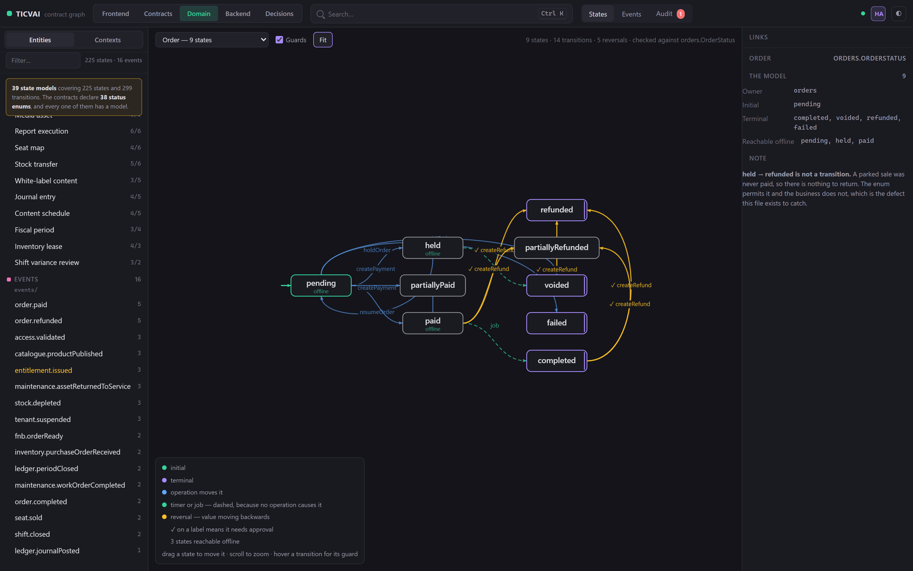
— The Order machine. Nine states, fourteen transitions, five of them
reversals. pending on the left carries the entry stub that marks an initial
state; the terminal states are stacked on the right with a second rule down their right
edge. Amber arcs are reversals — value moving backwards.
Reading a machine
What you see
What it means
Entry stub — a short arrow into the left edge
An initial state. A record may be created here. Usually one; occasionally several, where a record can be created already advanced.
Double rule down the right edge
A terminal state. Nothing leaves. The check that every state can reach one is what catches a state that traps records.
offline under the name
A terminal can enter this state with no network. Everything else needs the server. On a POS this is the difference between a sale that completes and one that cannot.
Solid blue arrow
An operation in a contract causes this move. Its operationId is the label.
Dashed green arrow
A timer or a background job causes it. Dashed because no operation in any contract produces it — there is nothing to call and nobody watching.
Amber arc, bowing out of the row
A reversal: a transition that undoes an earlier one. Marked because reversals are where money and entitlements move backwards, and they carry different approval requirements.
✓ before a label
The transition requires approval — a person with the right grant must authorise it.
A state outlined in red
Unreachable from any initial state, unable to reach a terminal one, or not in the contract enum at all. Each is a finding, and each appears in the audit.
Why reversals bow out of the row
Reversals are excluded from the depth calculation that decides which column a state sits
in. A refund reaching back from completed would otherwise drag the whole tail
of the machine leftwards and the diagram would read as a tangle. They are still drawn —
they just do not decide where anything sits.
The guard — hover a transition
A transition's guard is the condition that must hold for the move to be allowed, and
it is the real reason the file is written down: stated here, it is not only in whoever wrote
the handler. Hover any transition to read it. Only the one under the pointer shows its
guard — selecting a state can make five transitions active at once, and five guards would
land on top of each other.
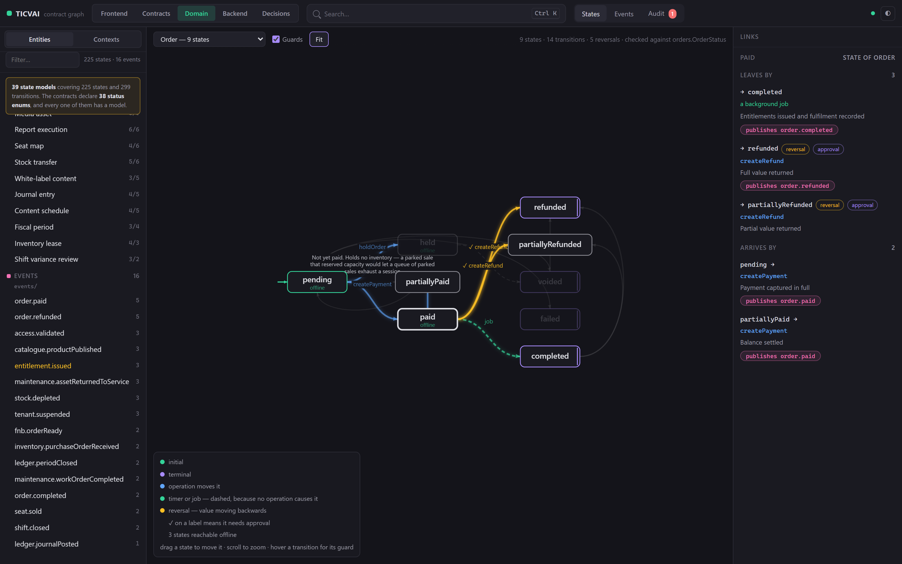
— The guard on the transition under the pointer. Turn
Guards off in the toolbar to suppress them.
Selecting a state
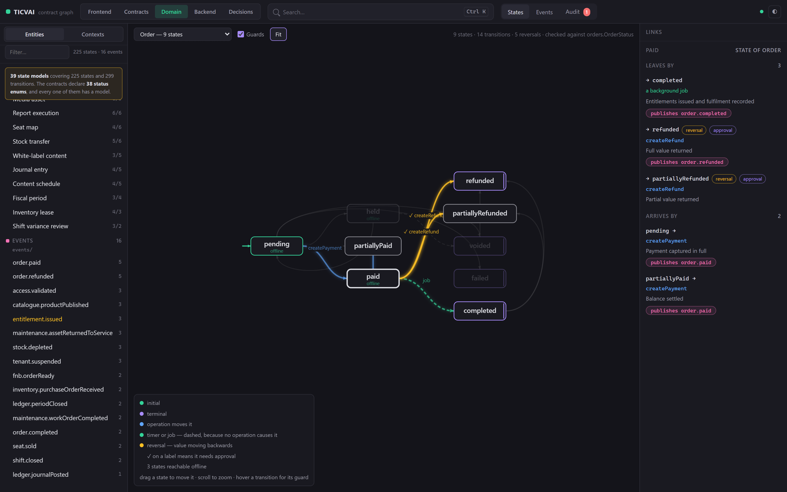
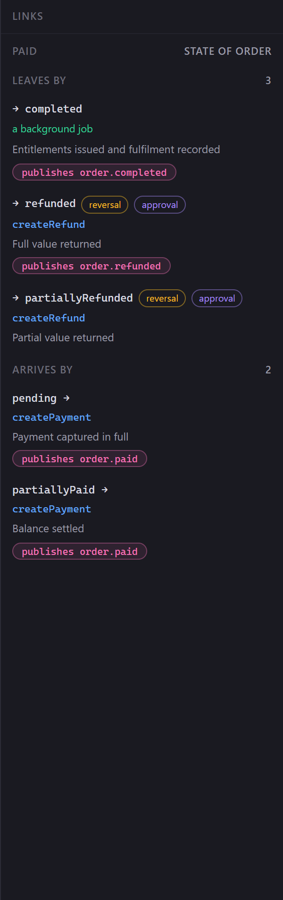
— Click a state and everything not touching it dims. The right pane
then lists every way it is left and every way it is reached: the operation, the
guard, whether it is a reversal, whether it needs approval, and what it publishes. The
operation name opens it in the Contracts layer; the pink event chip opens it in the
catalogue.
With nothing selected the pane describes the model as a whole — its owner, its initial and
terminal states, which states are reachable offline, and the author's note. Order's note is
the clearest statement of what this folder is for:
From states/order.yaml
held → refunded is not a transition. A parked sale was never paid, so there is
nothing to return. The enum permits it and the business does not, which is the defect this
file exists to catch.
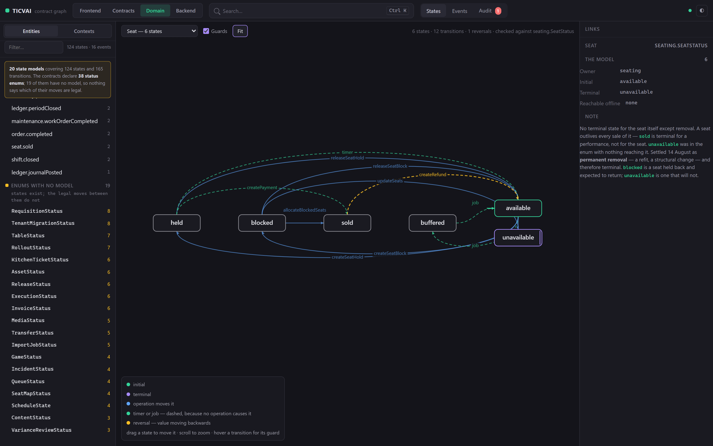
— A different shape. The Seat machine has one state per column, so
transitions that skip a column arch over the boxes between rather than running through
them. Boxes drag; the layout is deterministic, so it is a sensible place to start from
rather than something to fight.
The sidebar — and the list that matters
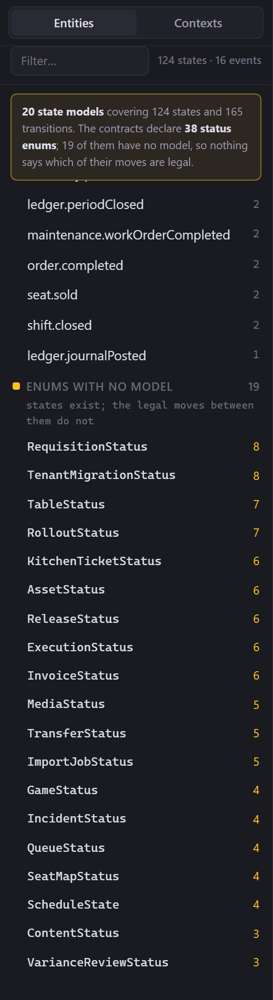
— Three groups. State models shows
states/transitions for each. Events shows the consumer count.
Enums with no model is the third, and it is now empty: all thirty-eight status
enums have a model. An amber name in the first two groups is a model with no enum behind
it, or an event nothing emits.
Switch the grouping to Contexts for the other reading: the sixteen bounded contexts
and what they owe each other, counted as n↑ published and n↓
consumed. Reporting consumes nine events and publishes none; marketing seven. That asymmetry
is the shape of the platform.
8.2 · Events — what crosses the outbox
platform.outbox has always existed and has always been correct: publication is
atomic with the state change, so a crash cannot leave an event unpublished for a change that
happened. What never existed was a description of what it carries — who publishes,
who consumes, what the payload is, and what a consumer does with a duplicate. Without that,
an event is a contract between two services that neither one wrote down.
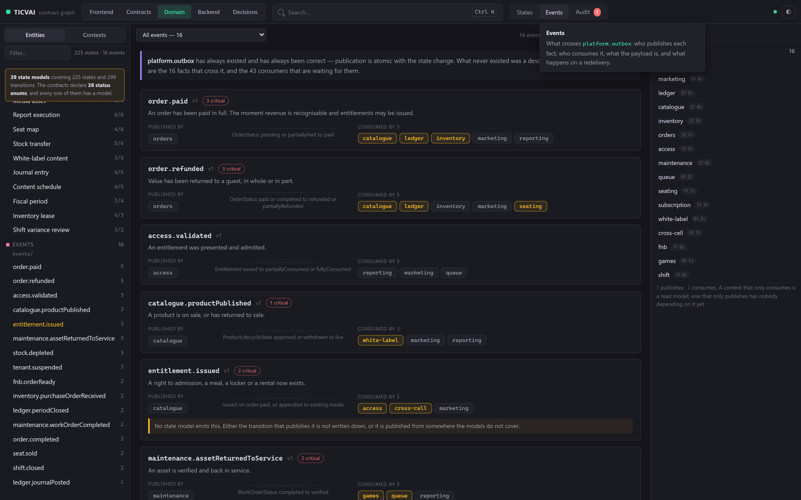
— The catalogue, read as a ledger of who tells whom. Each row is one
event: publisher on the left, the transition that emits it in the middle, every consumer on
the right. Amber chips are critical consumers — the business breaks if they never
run. An event no state model emits carries an amber note saying so.
Sixteen events, forty-three consumers, twenty-one of them critical.
order.paid is the most consumed event in the platform: five consumers, three
critical. A dead-lettered order.paid means a guest paid and holds nothing, so it
pages rather than logs.
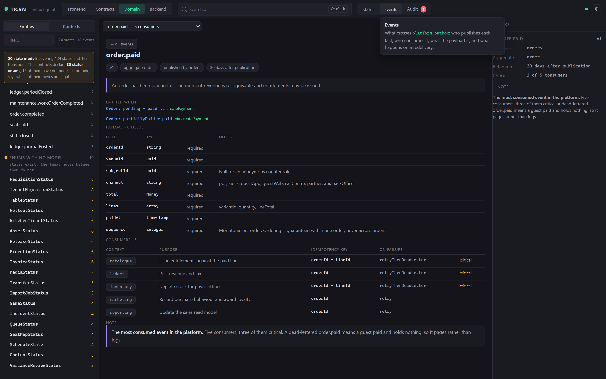
— One event in full. Emitted when links back to the exact
transition in the state machine. The payload is tabulated with required and optional
marked. The consumer table gives each context's purpose, its idempotency key and
what it does on failure.
The two rules the catalogue enforces
Rule
Why
Every event has at least one consumer
An event nobody consumes is a write nobody reads — either the consumer was never built, or the event should not be published.
Every consumer states its idempotency key
Delivery is at-least-once. A consumer that cannot say what makes a delivery a duplicate will process one twice, and the second time will be a Saturday.
onFailure takes one of four values, and hovering it in the table explains each:
retry, retryThenDeadLetter (the usual choice for anything
critical), deadLetterImmediately and ignore.
Commands are deliberately absent
This catalogue is facts that have already happened — order.paid, not
payOrder. A published event a consumer can refuse is a distributed
transaction wearing a disguise. Ordering is guaranteed per aggregate, never globally: two
orders may be processed in any order, two events about the same order may not.
8.3 · What the layer checks
Every check runs against the contracts the viewer has already indexed, so nothing can be
checked against the wrong copy. The Audit tab lists whatever fails.
Check
Catches
Every modelled state is in the contract enum
A model that has drifted from the API
Every enum value is modelled
A state nobody has thought about
Every state is reachable from an initial one
A state records can never get to
Every state can reach a terminal one
A state that traps records
Every operation named by a transition exists
A move caused by a call that was renamed or removed
Every event a transition emits is catalogued
A consumer waiting for a message that never arrives
Every catalogued event has a publishing transition
A fact the catalogue claims that nothing produces
Every event has a consumer, and every consumer an idempotency key
The two rules above
Offline-reachable states are states the entity has
A typo in the one list a POS depends on
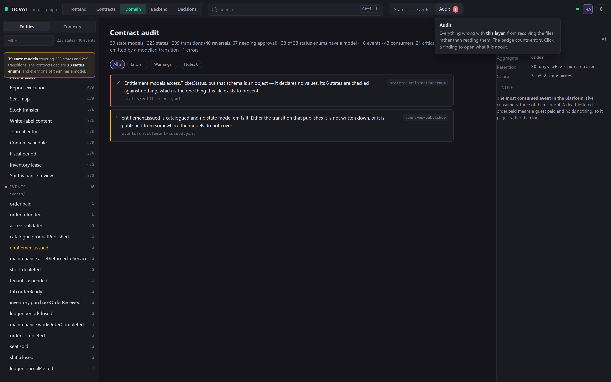
— The domain audit. Click a finding to open the model or the event it
is about.
Two findings, as issued
states/entitlement.yaml is anchored to something that is not an enum.
It declares contract: access, enum: TicketStatus — and
access.TicketStatus is an object describing a validated ticket
(ticketId, isValid, entriesUsed) with no enum values
at all. None of issued, partiallyConsumed,
fullyConsumed, expired, cancelled or
surrendered appears anywhere in any contract. The one model covering the
entity that both access.validated and entitlement.issued are
about is therefore checked against nothing — the single thing the folder exists to prevent.
entitlement.issued is catalogued and no transition emits it. Fifteen of
the sixteen events name a transition in states/ that publishes them. Either
the transition is not written down, or it is published from somewhere the models do not
cover.
The command-line checker disagrees, and it is wrong
tools/check-states.py runs the same checks from a terminal and reports errors
that are not real. Line 36 looks for the contracts as a sibling of the project
root:
Neither that path nor its fallback exists in this repository, so it loads zero enums and
zero operations and every lookup fails identically. Repointed at contracts/ it
passes. tools/check-frontend.py has the same bug. The viewer resolves against
the contracts it has already indexed, so it cannot go looking in the wrong place.
9 · Backend layer
Two sources with different standing, kept apart on purpose: 39 tables that exist in SQL, and
230 that the contracts imply.
Data — the ER diagram, at two zoom levels
Boxes are placed in a hierarchy, not a cloud: a table sits below the tables
it references, so the things the rest of the schema hangs off end up along the top. The
arrangement is deterministic — the same data always draws the same picture — and any box can
then be dragged anywhere and will stay there. Re-picking the scope restores the tidy layout.
Zoom 1 · Whole database — 21 boxes instead of 230
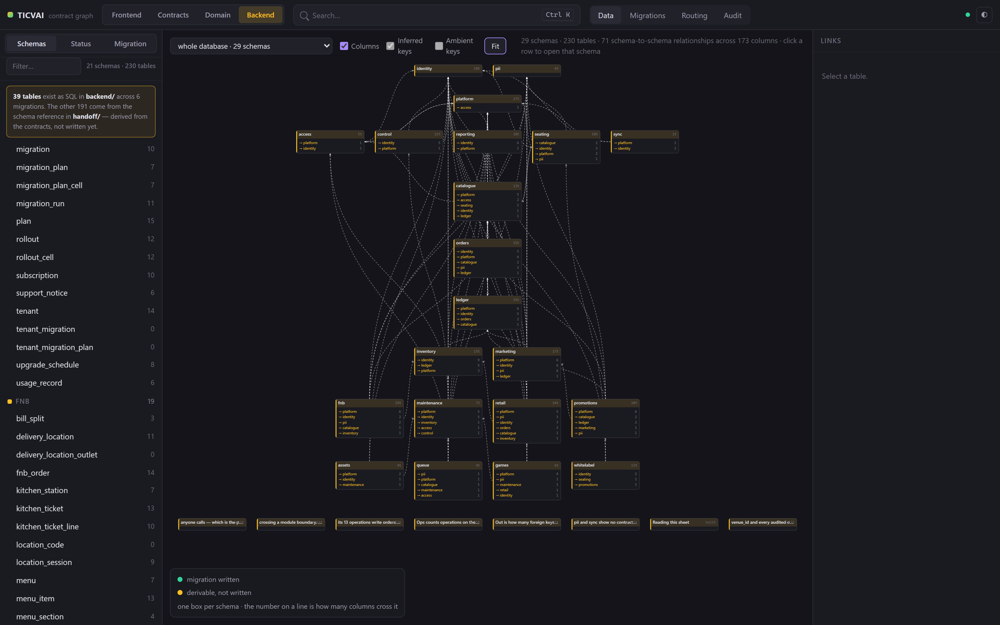
— One box per schema, each listing which other schemas its keys reach into
and how many columns do the reaching. Every table at once is a hairball with no room for
labels, so this is the map you start from. Click a schema to drill in.
Zoom 2 · One schema — its tables as entities
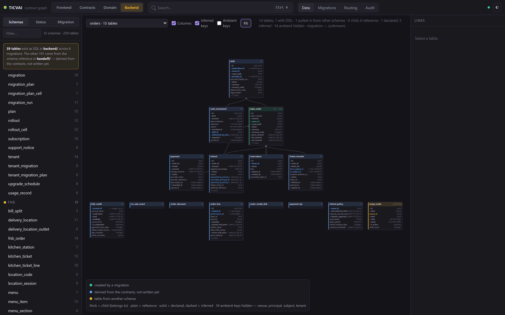
— One schema's tables, every column with its type and •
marking required. Green means a migration creates it and it is really there; blue means
it is derived from the contracts and still only planned; amber is a table pulled in
from another schema because something here points at it.
Control
Does
Scope picker
whole database, or any one of the 21 schemas.
Columns
Column rows on or off. Off fits far more tables on screen.
Inferred keys
The dashed relationships, on or off. Off leaves only what is genuinely declared — the quickest honesty check on this view.
Fit
Reframes everything, clear of the legend.
Click a table
Selects it; the right pane fills with what the DDL says.
Click a column
Follows its key to the table it points at.
Drag a box
Moves it and leaves it there.
Hover or select
Unrelated tables dim; the connected lines thicken and glow.
Relationships come in three kinds, strongest first
Kind
Drawn
Meaning
REFERENCES clause
Solid
The database saying what is true. 52 of these, 12 of them composite (id, level) keys.
Declared in a contract
Solid
A column whose source property is a $ref. 11 of these.
Inferred from a name
Dashed
An _id column resolved by trying successively shorter suffixes, so
added_by_principal_id finds identity.principal. 289 of these.
Inference is conservative: a table in the column's own schema wins over one elsewhere, a name
owned by two schemas is refused rather than guessed at, and inference is dropped entirely for
any table the DDL already covers.
The DDL teaches the inference
venue_id appears on 50 tables and there is no venue table — a
venue is a level of platform.scope_node, which only the migrations
know. Where a migration resolves a column name, that answer is reused for the same name
elsewhere and labelled per DDL.
Migrations — what backend/ actually contains
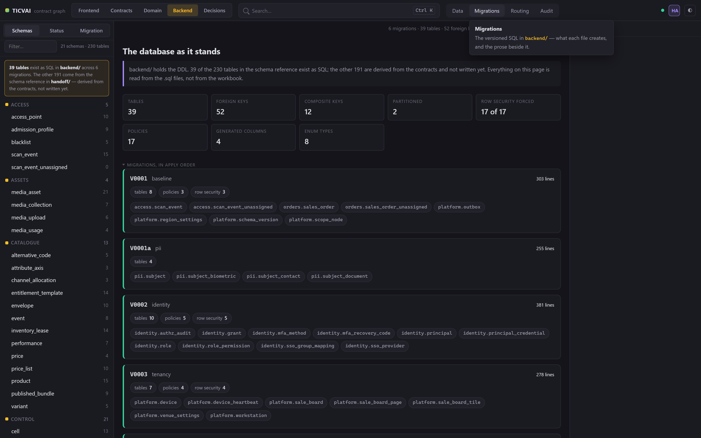
— Each .sql file in apply order with the tables it creates,
its policies and row-security coverage, above totals for the whole set. Click any table
name to open it in the Data view.
The totals are the honest summary of the database today: 6 migrations, 39 tables, 52
foreign keys, 12 composite keys, 2 partitioned tables, 16 of 16 tables with row security
forced, 16 policies, 4 generated columns and 8 enum types. The 21 storage-only
tables are listed with the reason each has no contract schema, so the gap reads as a decision
rather than an omission. The prose from MIGRATIONS.md is shown alongside.
Routing — where each call goes
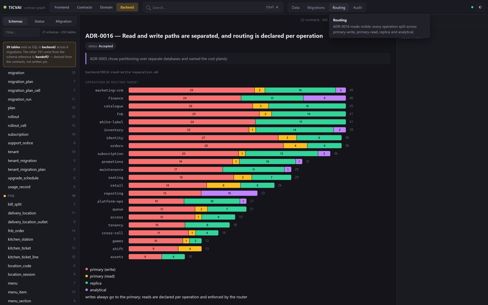
— ADR-0016 made visible: 654 routed operations across 22 contracts, split
into primary-write, primary-read, replica and analytical. 256 writes, 336 reads.
Each contract is a row with a bar showing the split. Use it to see which contracts are
write-heavy — those are the ones a read replica will not relieve — and which are candidates
for analytical routing.
10 · Decisions layer
A fifth layer over docs/: 18 ADRs, 31 register documents holding 1,107 rows,
and one spec that is not read but run.
Why a layer for prose
Every other layer reads a machine-readable artefact — contracts, YAML, a workbook, CSV — and
can be checked mechanically. docs/ is prose, and prose is where the reasons
live. The four layers before this one say what the platform is. None of them says why it
is that and not something else.
Prose is not renderable as a graph and should not be forced into one, so this layer does
three specific things rather than trying to be a documentation browser: it
indexes the ADRs so a reference to ADR-0013 anywhere in the viewer resolves to a title
and a decision rather than a file name; it pulls the tables out of the registers, so
what the delivery counted sits beside what the viewer computes; and it
executes the permission spec.
One view, four scopes on the toolbar — Decisions, Permissions, Gaps,
Registers — and its own Audit, as every layer has.
Decisions — the ADRs
18 ADRs, all 18 Accepted, 3 of them amended after acceptance. Each card carries the
decision itself — the text under ## Decision, not the context around it — its
date, what it closes, what it withdraws or supersedes, and what it constrains. Click the
title to open the file.
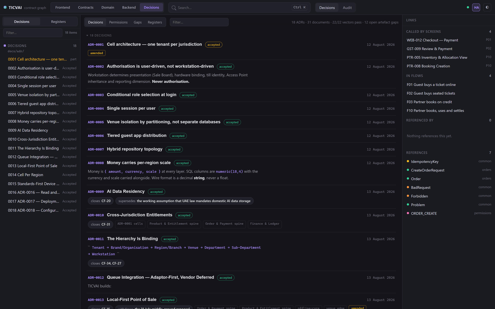
— The 18 ADRs, with ADR-0001 marked as accepted and partly
superseded.
The case that misleads
ADR-0001 is Accepted and its split rule is superseded by ADR-0014. Its
status line is one line making three statements — "Accepted — split rule superseded by
ADR-0014; isolation claim amended 14 August 2026" — and in a list of statuses it reads as
current. The part that matters is not current: cells are no longer split by jurisdiction,
they are split by Tenant × Region, and jurisdiction is now a placement constraint on
regions. Everything else in the ADR still stands.
So the viewer takes the first word as the verdict and the rest as the qualifier, and marks
the badge partly superseded where the qualifier mentions supersession. It is the
qualifier that is worth reading.
An ADR carrying an ## Amendment section is marked amended for the same
reason: the accepted date is then not the date of what the ADR now says. Three do —
ADR-0001, ADR-0013 and ADR-0014. A status the viewer does not recognise, or no status at
all, is a finding rather than a blank badge, because whether a decision is binding cannot
otherwise be told from the file.
Permission vectors — the spec, executed
docs/architecture/specs/permission-vectors.json opens with one line:
NORMATIVE. A failing vector is a build failure. It is the largest security surface in
the platform written down as data. Each vector is a set of grants, a query, and the verdict
the platform must reach.
A viewer that listed them would be a worse version of the file. One that evaluates
them checks that the rule as written actually produces the answers the spec claims — which
is the one thing reading it cannot tell you. So the viewer resolves every vector.
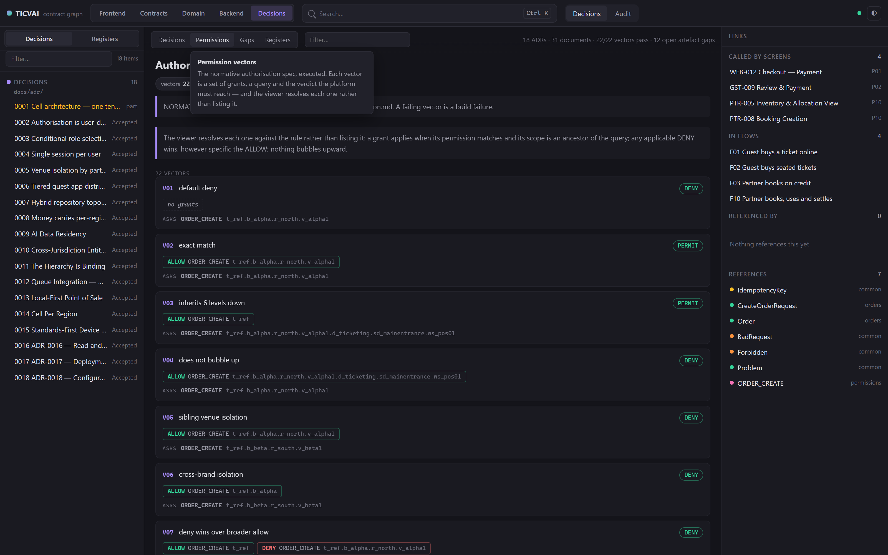
— The authorisation spec executed — every vector resolved against
the rule, not listed.
The rule, as the viewer implements it
Scopes are a seven-level tree — Tenant → Brand → Region → Venue → Department →
Sub-Department → Workstation — written as a path,
t_ref.b_alpha.r_north.v_alpha1. A grant applies when its permission matches
exactly or the grant is *, and its scope is the query scope or an ancestor of
it. Then:
any applicable DENY → DENY
otherwise any ALLOW → PERMIT
otherwise → DENY
The middle clause is the one people get wrong. Deny does not merely win at equal
depth. V10 grants ALLOW at the venue and DENY at the brand above it, asks at the venue,
and the answer is DENY — so there is no "most specific wins" tie-break anywhere in this.
The spec's own reasoning is that under most-specific-wins a tenant administrator's blanket
deny can be silently overridden by a venue allow somebody added months earlier; under
deny-overrides, a deny is a guarantee. And nothing bubbles upward: a grant at a workstation
says nothing about the venue that contains it (V04).
Vector
Grants
Asks
Verdict, and why
V01
none
ORDER_CREATE @ venue
DENY — default deny. Absence is never permission.
V03
ALLOW @ tenant
ORDER_CREATE @ workstation
PERMIT — inheritance runs six levels down.
V04
ALLOW @ workstation
ORDER_CREATE @ venue
DENY — nothing bubbles up.
V10
ALLOW @ venue · DENY @ brand
ORDER_CREATE @ venue
DENY — the specific allow does not override the broader deny.
V12
ALLOW @ tenant · DENY * @ region
ORDER_CREATE @ venue
DENY — the wildcard applies to denies.
22 of 22 pass. The spec's table states 28 vectors; the machine-runnable file carries
22. The six left out depend on inputs the grant model does not carry — which cell the scope
is in, which role the session selected, the session's workstation, an inactive node in the
path, an expired grant. Two of those, the inactive node and the expiry, are recorded in the
spec as gaps in the platform's own resolver. A vector that failed here would be an error in
this layer's audit, in the file's own words.
Writing the resolver found a bug — in the viewer, not the spec
The first run reported V12 as PERMIT where the spec requires DENY. The spec was
right. The viewer had a small helper that strips markdown emphasis off a table cell, and
it was being applied to grant data on the way into the resolver — so
*, which is a real value in a grant, was being deleted. The wildcard deny
became a grant for a permission named nothing, stopped applying, and the tenant-level
allow won.
The fix was to stop treating data as prose: the resolver reads grant fields as written,
and the stripping helper is marked for prose only. It is worth stating plainly because it
is the evidence that the harness does real work — a view that listed the vectors would
have shown a wildcard deny and been silently wrong about it.
Gaps — the artefact audit
handoff/artefact-audit.md classifies 3,297 requirements by the kind of
artefact each one needs, derived from the requirement text rather than from a checklist
somewhere else. It is the only register in the viewer that measures absence.
Everywhere else counts what is there.
15 artefact classes, 12 open, 1,612 requirements behind them, and 8 classes
with nothing at all behind them: Report (347 requirements), Configuration (273), Audit
(206), Notification (193), Integration (171), Validation rule (94), Retention/archive (89)
and Performance/SLA (30). The Report line is the clearest: 52 reports are named by title
and nothing lists them. There is a report definition engine —
createReport, runReport, scheduleReport — which is
the right shape; what cannot be shown is that any particular named report is covered,
because nothing maps title to definition.
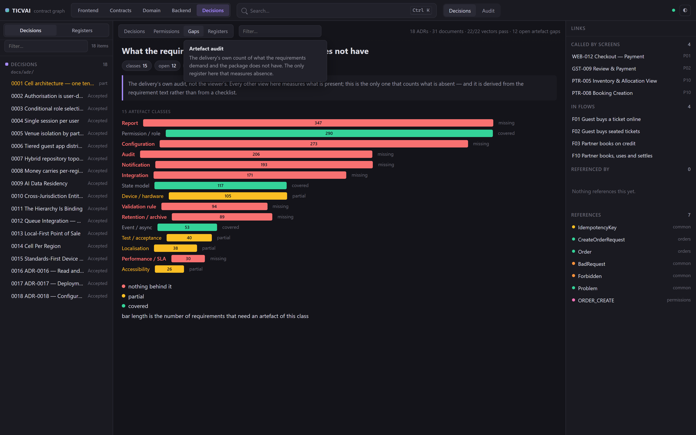
— The artefact audit, the one register that counts what is absent.
Each class is a bar, and bar length is the requirement count — red where there is
nothing behind the class, amber where cover is partial, green where it is covered. Hover a
name for the audit's verdict and what the package currently holds against it. Eight classes
with nothing behind them is the layer's one standing warning, and it is counted by the
delivery's own audit rather than by the viewer.
Registers
31 documents holding 1,107 rows of reference data, in five groups: registers (7),
the handoff narratives (9), architecture (6), in-flight (5) and guides (4). Each card shows
the document's lead paragraph, its file and its row count; clicking one opens the source in
the Reader.
The tables are the register and the prose around them is the reason for it, so the viewer
reads both and counts the rows. Prose has no node in the graph, which is why a document
opens as source rather than as a diagram.
11 · Tracing across layers
The right-hand pane answers one question about whatever is selected: what links to this?
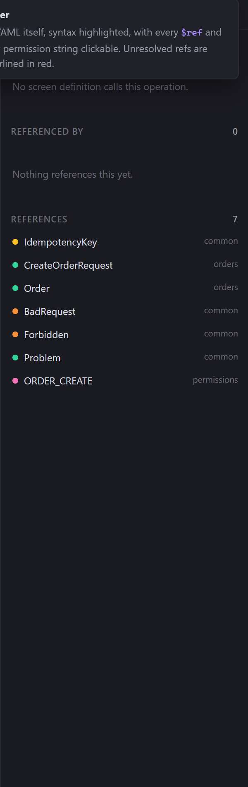
— An operation: which screens call it, which flows traverse it,
what references it and what it references.
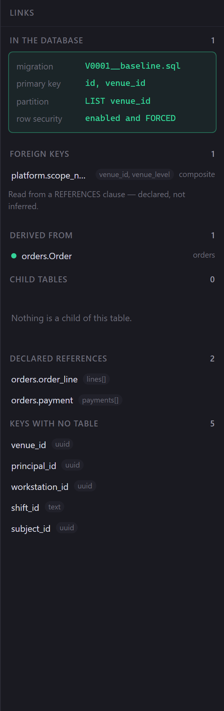
— A table: the operations and screens that reach it, what the
migration says about it, its real foreign keys, the contract schema it derives from, and
any _id column pointing at no table at all.
Selected
The pane shows
Operation
Screens that call it · flows that traverse it · what it $refs · what references it.
Schema
What references it, and which table it is persisted as — or, for 168 of them, why it deliberately has none.
Screen
Flows that step through it · screens that reach it.
Table
The operations that touch it, each marked writes or reads · the screens that reach it · migration, primary key, partitioning, row security · foreign keys with their ON DELETE · the contract schema it derives from · inferred keys · keys with no table.
The join runs the other way too
The first two sections of a table's pane come from the Where used sheet of the
schema reference, whose own subtitle is the reason to lead with them: what breaks if
this table changes. A foreign key says what a table is joined to; this says who would
notice if it moved. Where nothing reaches a table the pane says so rather than showing an
empty list — 39 of the 230 tables are reached by no operation at all, and only 51 are
reached by a drawn screen. Chapter 5 reads the same join from the contract end.
Every entry is a link, which is what makes the package traceable end to end. The table pane
above is orders.sales_order: it says the table is created by
V0001__baseline.sql, keyed on (id, venue_id), partitioned
LIST venue_id, with row security enabled and forced; that its one
declared foreign key is a composite reference into platform.scope_node; and that
it derives from the orders.Order schema in the contracts — from which you can
click straight through to the screens that display it.
Keys with no table
The last section lists _id columns that resolve to nothing. Some are real gaps;
some, like venue_id, are scope levels rather than tables. Five or more uses of
the same unresolved name is raised in the Backend audit.
12 · Search
One box over operations, schemas, permissions and paths.
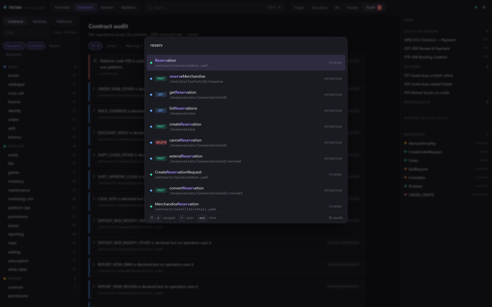
— Ctrl+K from anywhere. Type a fragment; arrows move,
Enter opens the result in the Reader, Esc closes.
Search matches operation ids, schema names, permission strings and URL paths, so
reserv finds the reservation operations, their request and response schemas and
the paths that serve them in one list. It is the fastest way in when you know a name but not
which contract owns it.
Deep links
Node ids are stable and live in the URL, so any operation or schema can be linked directly in
a ticket or a chat message:
Opening that URL selects the node and restores the view. Browser back and forward work as
expected.
13 · The audit
Each layer checks its own material, and the badge on the Audit tab counts that layer's
errors.
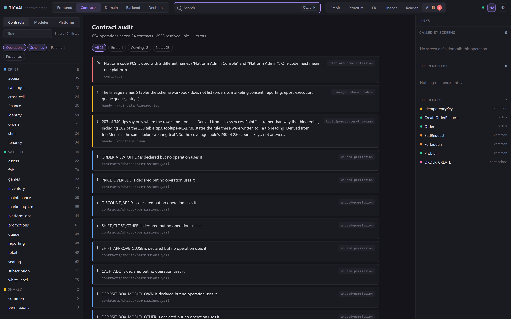
— The contract audit. Filter by severity along the top; every finding
names the file and line, so it is actionable as it stands.
What each layer checks
Layer
Checks
Contracts
Duplicate path keys · $refs that do not resolve · operations missing any of
the four required x-ticvai-* extensions · permissions used but absent from
the enum · permissions declared but unused · components nothing references · taxonomy
gaps · platform-code collisions · a lineage row that disagrees with its contract, names a
table the workbook does not list, or was generated against operations that no longer
exist.
Frontend
Screens calling an operation no contract declares · component kinds and region references
outside the vocabulary · the four-states rule, with offline required only
where the platform is offline-capable · navigation pointing at a screen that does not
exist · flow steps calling an operation their own screen never declares · route
collisions within an app · an offline-capable app with no offline package.
Domain
A modelled state that is not in the contract enum, and an enum value nothing models · a
state unreachable from any initial one · a state that can reach no terminal one · a
transition caused by an operation no contract declares · a transition publishing an event
the catalogue does not have · an event no transition emits · an event with no consumer ·
a consumer with no idempotency key · an offline-reachable state the entity does not have.
Backend
A table marked written with no migration behind it · a foreign key pointing at a table no
migration creates · a table created twice · columns the DDL has that the workbook does
not list · a table deriving from a schema no contract declares · any _id
column name used five or more times with no table behind it · a second, older copy of the
workbook · a sheet whose header row cannot be recognised.
Decisions
Every ADR states a status the register recognises, and its amendments are recorded ·
every permission vector in the authorisation spec is run rather than listed · every
artefact class the delivery's own audit names has a document behind it.
What it currently reports
Two errors across five layers. The Frontend layer has no errors and no warnings — an
earlier drop had several errors and all of them are fixed — and the duplicate
/reservations block that made createReservation unreachable is
gone too. It is not silent, though: seven of the twelve flows have no wireframe, and each is
listed as a note.
1 · Platform code P09 is used with two different names
"P09 Platform Admin Console" and "P09 Platform Admin". One code meaning two things is the
same failure mode permissions.yaml warns about for permission strings, and it
splits that platform into two sidebar entries. The only error the Contracts layer reports.
2 · A state model anchored to something that is not an enum
states/entitlement.yaml declares enum: TicketStatus, and
access.TicketStatus is an object, not an enum. Its six states are checked
against nothing. Chapter 8 sets this out in full, along with the reason
tools/check-states.py cannot see it.
Warnings worth knowing about
Layer
Warning
Domain
entitlement.issued is catalogued and no state model emits it.
Backend
Three, and the same shape as each other: an _id column name used repeatedly
with no table behind it. These are what the inference could not resolve, and they are
listed rather than guessed at.
Lineage
The lineage names five tables the schema workbook does not list.
Tooltips
203 of 340 tips say only where the row came from rather than why the thing exists,
including 202 of the 230 table tips.
Decisions
Eight artefact classes have nothing behind them — Report, Configuration, Audit and
others — counted by the delivery's own audit rather than by the viewer.
Two that the viewer itself was caught by
The 14 August workbook renamed a column on the Modules sheet from Columns to
Cols. The reader required every identifying header to match exactly, so the
header row was never found and the sheet read as empty: 230 tables and zero schemas.
Identifying headers now accept a list of names the workbook has used for the same thing,
and a sheet that still cannot be read is an error in this audit rather than a silently
empty view.
The same sheet caught it a second way. It ends with its own footnotes — "Reading this
sheet", then several sentences explaining what the Out and In columns mean, each one
a single cell in the first column. The reader took every non-empty row as a record, so
eight paragraphs of prose became eight schema modules and showed up in the schema picker.
The rule that separates them is that a data row fills every column that identifies the
sheet and a footnote fills one. The schema count is 21, not 29, and the eight
skipped rows are recorded as a note rather than dropped in silence.
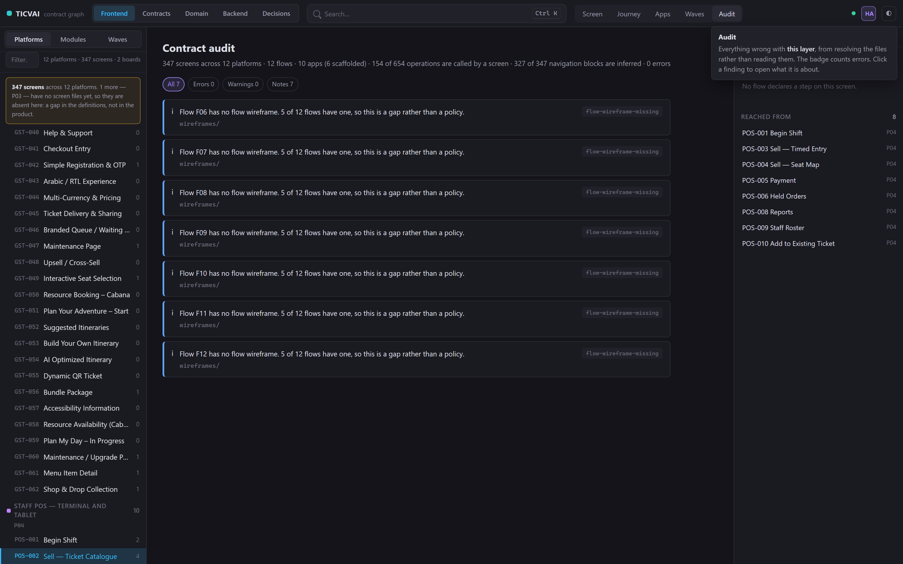
— The Frontend audit: no errors and no warnings, and seven notes for flows with no wireframe.
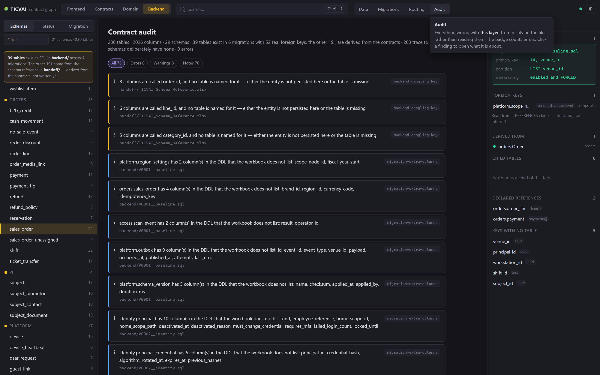
— The Backend audit, which is mostly a list of what has not been written yet.
14 · Reading the colours
The palette is consistent across every view. One page, all of it.
Contract tiers
Colour
Means
Blue
Spine — the core contracts the platform is built on.
Green
Satellite — a bounded capability that plugs into the spine.
Amber
Shared — common and permissions, referenced by everything.
Database tables
Colour
Means
Green
A migration creates it. The table exists. 39 of 230.
Blue
Derived from the contracts. Planned, not written.
Amber
Borrowed. Pulled in from another schema because something here points at it.
Lines
Style
Means
Solid
Declared — a REFERENCES clause in the DDL, or a $ref in a contract. Someone wrote it down.
Dashed
Inferred — worked out from a column or screen naming convention. Treat as a hypothesis.
Severity
Colour
Means
Red
Error — the package is wrong here and something will break.
Amber
Warning — probably wrong, or a rule bent.
Blue
Note — worth knowing, not a defect. Unused permissions land here.
HTTP methods
Operation badges follow the usual convention:
GET blue, POST green,
PUT amber,
DELETE red,
PATCH purple.
Light theme
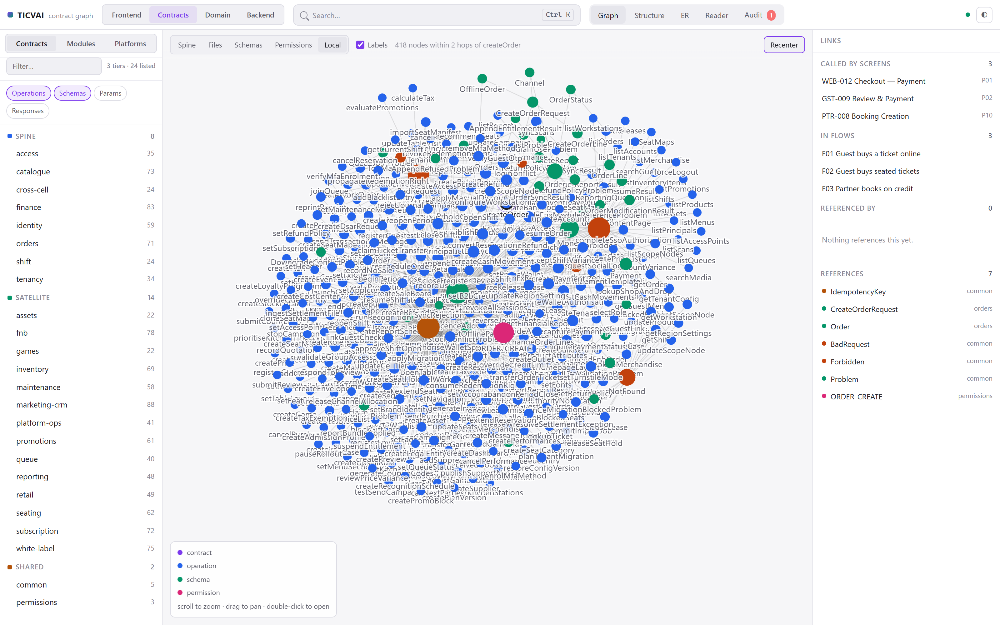
— The ◐ button top-right switches themes; the choice is remembered.
Same colour meanings throughout, and better for projecting or printing.
15 · Keyboard shortcuts
View shortcuts work from any layer — the viewer switches layer to follow you.
Key
Does
Ctrl/⌘+K
Open search. ↑↓ to move, Enter to open, Esc to close.
Open a graph node. On Structure, fold the whole branch.
Drag a box
Pin it in place, on ER and Data.
16 · Keeping it current
Edit a source file, save, and the open page updates itself.
The server watches contracts/, flows/, screens/,
frontend/ and backend/ and re-indexes on save — including the
.xlsx, so editing the schema reference in Excel updates the Data view. No
refresh, no restart. The green dot beside the theme button means the watch is live.
Where to change what
To change…
Edit
An endpoint or schema
contracts/**/*.yaml
What a screen contains
screens/*.yaml
A journey's steps or branches
flows/*.yaml
An app's routes or waves
frontend/*.yaml
The database as planned
handoff/TICVAI_Schema_Reference.xlsx
The database as built
A new backend/V####__*.sql
The workbook is delivered to more than one folder
Copies drift. The viewer finds every copy and reads the newest, and reports a stale one
rather than silently preferring it — backend/ held a build behind
handoff/ for a while, and whichever folder you happened to open decided which
numbers you believed. Edit the copy in handoff/.
Regenerating this manual
The figures in this document are photographs of the running application, not mock-ups. With
the viewer running:
cd viewer
node manual/capture.mjs # re-shoots every figure
node manual/build.mjs # re-renders the PDF
capture.mjs drives a real browser through every view; if a view fails to render
or the console reports an error, the capture exits non-zero rather than producing a manual
with a blank figure in it. Adding a view to the viewer means adding one entry to the
SHOTS sequence and one section here.
17 · Known gaps
On disk but not shown, and why. None of these are bugs; each is a decision.
Not shown
Why
Whole-platform sitemap
Entry and exit points are shown per screen and are clickable, but there is no
navigation graph across a platform. Worth building only once more of the 327 inferred
navigation blocks are confirmed — a guessed sitemap drawn authoritatively is worse than
none.
Platforms with no screen files
None left. P03, P06, P07 and P13 were the last four; they landed and took the count to
12 platforms and 347 screens. The sidebar note counts platforms from the deployment
table rather than asserting a list, so it stays right as more arrive.
Row-security policies
The viewer says a table is FORCED, not what the 16 policies actually permit.
Board-to-region mapping
A design board is attached to a screen, not to the part of the board that screen is.
Reading one exported design board as nine screens is still a manual job. The wireframe
platform boards do not have this problem — each screen has its own anchor on the board,
so the viewer frames exactly the right part.
An events graph of its own
The Domain layer lists contexts; the drawing of them is the Contracts layer's
Spine scope, because they are the same 24 nodes. There is no view where events rather
than contracts are the nodes.
Two tool results to distrust
tools/check-frontend.py looks for the frontend repository as a sibling
of the project root, but it is checked out at repos/ticvai-frontend. It
therefore reports screens across apps that do not exist. They do exist;
frontend/platform-deployment.md is correct.
tools/check-states.py has the same bug in the same family — line 36 points at a
contracts directory that is not there, so it loads zero enums and every lookup fails. Both
pass once repointed. Fix the path before acting on either one's output; chapter 8 has the
detail.
18 · Troubleshooting
Symptom
Cause and fix
Page will not load
The server is not running, or something else holds port 4173. Start it with
npm start --port 4180 and open that port instead.
The green dot is grey
The live connection dropped — usually the server was stopped or restarted. Reload the
page.
Edits do not appear
Check the file is under a watched folder and has a watched extension
(.yaml, .yml, .xlsx, .md). Excel's
lock files and temporary copies are deliberately ignored, so the workbook only reindexes
once you actually save it.
A diagram is a hairball
Press Fit or Recenter. On Data, drill into one schema rather than viewing
all 230 tables. On Graph, use Local with something selected.
Numbers disagree with a spreadsheet
You are probably reading a stale copy of the workbook. The viewer reads the newest copy
and reports the older one in the Backend audit.
A table shows no relationships
Check Inferred keys is on. If it is, the table's _id columns resolve
to nothing — see "keys with no table" in the Links pane.
A screen shows no navigation
All 347 screens have navigation, but 327 blocks are inferred and drawn as dashed pills
under their own heading. Look below the operations list.
19 · Glossary
Term
Means
Spine
A core contract the platform is built on — identity, orders, catalogue, tenancy and so on. 8 of them.
Satellite
A bounded capability that plugs into the spine — F&B, games, assets. 14 of them.
Shared
common.yaml and permissions.yaml, referenced by nearly everything.
Module
A functional grouping declared as x-ticvai-module, used to organise both contracts and screens.
Platform
A coded surface — P01 Guest Web Storefront, P10 Partner Portal, and so on. Declared per contract, so a contract appears under every platform it names.
Wave
Delivery phase. Screens and apps carry the wave they ship in.
Flow / journey
One job a person came to do, traced across screens, with the branches that can derail it.
Branch
A way a journey step can go wrong, with a severity from recoverable through to data loss.
The four states
Loading, empty, error and — where the platform is offline-capable — offline. Every screen must declare all that apply.
Declared
Written down by a person in a source file. Drawn solid.
Inferred
Worked out by the viewer from a naming convention. Drawn dashed, counted separately, switchable off.
DDL
The SQL in backend/ that creates tables. The strongest evidence available.
Storage-only table
A table with no contract schema behind it, by design — outbox, schema version, partition defaults. 21 of them.
Composite key
A foreign key over more than one column, here usually (id, level) — needed because a scope node is identified by both.
Row security FORCED
Row-level security that applies even to the table's owner, not merely enabled.
Not persisted
A contract schema deliberately backed by no table — a request body, a response envelope, an enum. 168 of them.
Ambient key
A key to one of the four hub tables — venue, principal, subject, tenant. True of nearly every table and therefore saying nothing about any one of them. 163 of the 352 relationships. Hidden by default.
Child edge
This row belongs to that row and has no meaning without it. Drawn heaviest of the three edge kinds.
State model
The legal transitions for one status enum: which moves are allowed, what causes each, and what must be true first. In states/.
Initial / terminal
A state a record may be created in / a state nothing leaves. Every state must be reachable from an initial one and able to reach a terminal one.
Guard
The condition that must hold for a transition to be allowed. Written down so it is not only in whoever wrote the handler.
Reversal
A transition that undoes an earlier one. Marked because reversals are where money and entitlements move backwards, and they carry different approval requirements. 40 of the 299.
Offline-reachable
A state a terminal can enter with no network. Everything else needs the server.
Domain event
A fact that has already happened, published through platform.outbox — order.paid, never payOrder. In events/.
Aggregate
What an event is about. Ordering is guaranteed within one instance of it and never globally.
Idempotency key
What makes a redelivery a duplicate. Required of every consumer, because delivery is at-least-once.
Critical consumer
One the business breaks without. A dead-lettered critical event is a page, not a dashboard. 21 of the 43.
Context
A bounded context — which is also what a contract is. The 16 that publish or consume events are where the real coupling between contracts lives.
Wireframe
A rendered drawing of one screen, flow or platform, generated from the screen definition. Structure only — what is on the screen and where, not what it will look like. In wireframes/.
Design board
An exported UI/UX artboard covering a whole platform, drawn by a designer. In designs/.
Where this manual comes from
Written against the viewer in viewer/; every figure was captured from it
running against the delivery package on 14 August 2026 — none is a mock-up, and the figure
numbers are counted rather than typed. If a screenshot disagrees with what you see, the
package has moved on: re-run node manual/capture.mjs and
node manual/build.mjs.